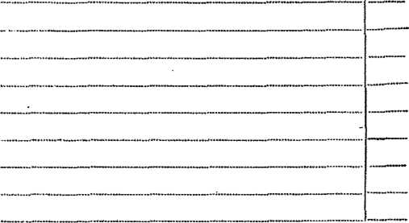
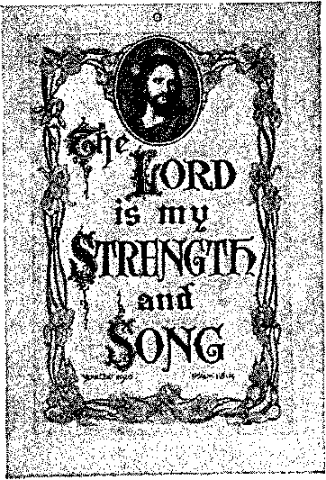

No. 24
.380
.381
.376
.377
m n?£Ion!i wlf’’1 Ty'’Ph'Utv • the sea and the waves (the restless, discontented) roaring; men’s hearts failing them for fear and for looking
w- u- J rarih isoriert • for the powers of the heavens (eceiesiasucism) shall be shaken . . When te see these things begin to come to naw
then allow LUal the K.mbaom of ^.od is hand. Look up. lift up your btuds. rejoice, for your redemption draweth nigh.— Matthew 24:33; Mark 13:29; Luke 21:^5 31
Tseming Cotm®, snd a/wpt ajs©H»».2i: ihz
Anno Mundi 6048— December 15, 1919
CONTENTS
Annual Report for 1919.......................
Many Friends Shared Ignominy......—
Colporteur Work ...................................
Volunteer Work .......................................
The Golden Age.......................................
Pilgrim Service .......................................
Conventions .............................................
Foreign Field ..........................................
Financial ...............................................
Bethel Restored ......................................
Let Brotherly Love Continue.......-.....
Peter and John Heal a Lame Man.... The Boldness of Peter and John........
.371 .371
.371 .372 .372 .373 .373 ..373 .374
.374
ROCK OF AGES Other foundation can *
Peter Stands up for Truth and Honesty..378
The Gospel a Message of Joy.
Your Good Hopes for 1920.....
“I will stand upon my watch, and will set my foot upon the Tower, and will watch to see what He will say unto me, and what answer I shall make to them that oppose me.”—Habakkuk 2:1.
THIS JOURNAL AND ITS SACRED MISSION
THIS journal is one of the prime factors or instruments in the system of Bible instruction, or “Seminary Extension”, now being presented in all parts of the civilized world by the Watch Tower Bible a Tract Society, chartered A. D. 1884, “For the Pro motion of Christian Knowledge”. It not only serves as a class room where Bible students may meet in the study of the divine Word but also as a channel of communication through which they may be reached with announcements of the Society’s conventions and of the coming of its traveling representatives, styled “Pilgrims”, and refreshed with reports of its conventions.
Our “Berean Lessons” are topical rehearsals or reviews of our Society’s published Studies, most entertainingly arranged, and very helpful to all who would merit the only honorary degree which the Society accords, viz.. Verbi Dei Minister (V. D. M.J, which translated into English is Minister of God’s Word. Our treatment of the International Sunday School Lessons is specially for the older Bible students and teachers. By some this feature is considered indispensable.
This journal stands firmly for the defense of the only true foundation of the Christian’s hope now being so generally repudiated —redemption through the precious blood of “the man Christ Jesus, who gave himself a ransom [a corresponding price, a substitute] for all”. (1 Peter 1 : 19 ; 1 Timothy 2:6) Building up on this sure foundation the gold, silver and precious stones (I Corinthians 3:11* 15; 2 Peter 1:5*11) of the Word of God, its further mission is to “make all see what is the fellowship of the mystery which . . . has been Md in God, ... to the intent that now might be made known by the church the manifold wisdom of God”—‘ which in other ages was not made known unto the sons of men as It Is now revealed”.—Ephesians 3:5-9, 10.
It stands free from all parties, sects and creeds of men, while it seeks more and more to bring its every utterance into fullest subjection to the will of God in Christ, as expressed in the holy Scriptures. It is thus free to declare boldly whatsoever the Lord hath spoken—according to the divine wisdom granted unto us to understand his utterances. Its attitude is not dogmatic, but confident; for we know whereof we affirm, treading with implicit faith upon the sure promises of God. It is held as a trust, to be used only In his service; hence our decisions relative to what may and what may not appear in its columns must be according to our judgment of his good pleasure, the teaching of his Word, for the upbuilding of his people in grace and knowledge. And we not only invite but urge our readers to prove all its utterances by the infallible Word to which reference is constantly made to facilitate such testing.
TO US THE SCRIPTURES CLEARLY TEACH
That the church is “the temple of the living God”, peculiarly “his workmanship”; that its construction has been In progress throughout the Gospel age—ever since Christ became the world’s Redeemer and the Chief Corner Stone of his temple, through which, when finished, God’* blessing shall come “to all people”, and they find access to him.—1 Corinthians 3:16, 17; Ephesians 2:20-22; Genesis 28:14; Galatians 3:29.
That meantime the chiseling, shaping, and polishing of consecrated believers in Christ’s atonement for sin, progresses ; and when the last of these “living stones”, “elect and precious,” shall have been made ready, the great Master Workman will bring all together in the first resurrection ; and the temple shall be filled with his glory, and be the meeting place between God and men throughout the Millennium.—Revelation 15 : 5-8.
That the basis of hope, for the church and the world, lies in the fact that “Jesus Christ, by the grace of God, tasted death for every man,” “a ransom for all,” and will be “the true light which Hghteth every man that cometh into the world”, “in due time”.— Hebrews 2:9; John 1: 9 ; 1 Timothy 2:5, 6.
That the hope of the church is that she may be like her Lord, “see him as he is,” be “partakers of the divine nature”, and share his glory as his joint-heir.—1 John 3:2; John 17:24; Romans 8:17; 2 Peter 1:4.
That the present mission of the church is the perfecting of the saints for the future work of service; to develop in herself every grace; to be God’s witness to the world; ana to prepare to be kings and priests in the next age.—Ephesians 4:12; Matthew 24 : 14 ; Revelation 1:6; 20 : 6.
That the hope for the world lies in the blessings of knowledge and opportunity to be brought to all by Christ’s Millennial kingdom, the restitution of all that was lost in Adam, to all the willing and obedient, at the hands of their Redeemer and his glorified church —when all the wilfully wicked will be destroyed.—Acts 3:19-23; Isaiah 35.
Published oy
WATCH TOWER. BIBLE 6-TRACT SOCIETY
124 COLUMBIA HEIGHTS a a BROOKLYN. NY, USA
Foreign Offices : British Branch: 34 Craven Terrace, Lancaster Gato, London W. 2 ; Australasian Branch ; 495 Collins St.. Melbourne, Australia; South African Branch: 123 Plein St., Cape Town, South Africa.
Please Address the Society in Every Case
ANNUAL SUBSCRIPTION TRICE $1.00 (4s.) IN ADVANCE
SEND MONEY BY EXPRESS OR POSTAL ORDER, OR BY BANK DRAFT FROM FOREIGN COUNTRIES BY INTERNATIONAL POSTAL ORDERS ONLY (Foreign translations of this journal appear in several languages) Editorial Committee: This journal is published under the supervision of an editorial committee, at least three of whom have read and approved as truth each and every article appearing in these columns. The names of the editorial committee are: J. F. Rutherford, W. E. Van Aiiburgh, F. H. Robison. G. H. Fisher, W. E. Page. Terms to the Lord’s Poor: All Bible students who, by reason of old age or other infirmity or adversity, are unable to pay for this journal, will be supplied free if they send a postal card each May stating their case and requesting such provision. We are not only willing, but anxious, that all such be on our list continually and in touch with the Berean studies.
tn We do not. && * rule, send & card of acknowiedument for a renewal or
x-voiice io &UD»cnoer9. for a new. 9Ub#crlpt/on. Receipt and entry of renewal are indicated within a month by change in expiration date, aa shown on wrapper label.
Entered as Second Close Matter at Brooklyn, N. Y., Postojficc under the Act of March 3rd 1879, and N*<* iS&. Par. J, P L. & R. Transferred from Pittsburgh. Pa
LOCAL CONVENTIONS
Charlotte, N. C., December 25-28. Brother Rutherford and at least two pilgrim brethren will be present. Further information may be secured from Oliver Haverstock, 406 South Church St., Charlotte, N. C.
Sr. Petersburg, Fla., December 25-28. At least two pilgrim brethren will address this convention. Address Mrs. E. F. Wilson, 227 South Fifth St., St. Petersburg, Fla., for further information.
Columbus, Ohio, January 1-4. Three pilgrim brethren will be present at this convention. Address Frank D. White, 147 Winner Avenue, Columbus, Ohio.
PROXY HOLDERS NOTICE
Some of the friends report that they did not receive blank proxies for the approaching election, January 3rd. These proxy blanks were inserted as a supplement in the December 1st issue, and anyone who has failed to receive a blank will be gladly supplied if notification is sent us.
STUDIES IN THE SCRIPTURES
These Studies are recommended to students as veritable Bible keys, discussing topically every vital doctrine of the Bible. More than eleven million copies are in circulation, in nineteen languages. Prices are net, postpaid, and barely cover cost of production and handling. Two sizes are issued (in English only) : the regular maroon cloth, gold stamped edition on dull finish paper (size 5”x 7J-), and the maroon cloth pocket edition on thin paper (size 4- x 61*1 ; both sizes are printed from the same plates, the difference being In the margins; both sizes are provided with an appendix of catechistlc questions for convenient class use. Prices for both editions are uniform. The leather bound and fine India paper editions formerly Issued are permanently out of stock.
Series I, “The Divine Plan of the Agee," giving outline of the divine plan revealed In the Bible, relating to man’s redemption and restitution : 350 pages, plus indexes and appendixes. 75e. Magazine edition 15c. Also procurable in Arabic, Armenian, Dano-Norwegian, Finnish, French, German, Greek, Hollandish, Hungarian, Italian, Polish, Roumanian, Slovak, Spanish, Swedish, and Ukrainian; regular cloth style, price uniform with English.
Series II, "The Time is at Hand," treats of the manner and time of the Lord’s second coming, considering the Bible testimony on this subject: 366 pages, 75c. Obtainable in Dano-Norwegian, Finnish, German, Polish, and Swedish.
Series III, “Thg Kingdom Come," considers prophecies which mark events connected with “the time of the end”, the glorification of the church and the establishment of the Millennial kingdom ; it also contains a chapter on the Great Pyramid of Egypt, showing its corroboration of certain Bible teachings : 380 pages, 75c. Furnished also in Dano-Norwegian, Finnish, German, Polish, and Swedish.
Series IV, “The Battle of Armageddon," shows that the dissolution of the present order of things is in progress and that all of the human panaceas offered are valueless to avert the end predicted by the Bible. It contains a special and extended treatise on our Lord’s great prophecy of Matthew 24 and also that of Zechariah 14 : 1-0 : 656 pages, S5c. Also in Dano-Norwegian, Finnish, Greek, German, and Swedish.
Series V, “The Atonement Between God and Man," treats an all important subject, the center around which all features of divine grace revolve. This topic deserves the most careful consideration on the part of all true Christians: 618 pages, 85c. Procurable likewise in Dano-Norwegian, Finnish, German, Greek, and Swedish.
Series VI, "The New Creation," deals with the creative week (Genesis 1,2), and with the church, God’s new creation. It examines the personnel, organization, rites, ceremonies, obligations, and hopes appertaining to those called and accepted as members of the body of Christ: 730 pages. S5c. Supplied also in Dano-Norwegian, Finnish, German, an<l Swedish.
No foreign editions in the pocket size.
AMD HERALD OF CHRIST^ PRESENCE
Vol. xl December 15, 1919 No. 24
ANNUAL REPORT FOR 1919
“Thou crownest the year with thy goodness."—Psalm 65: 11.
WHAT more appropriate thing could Christians do than to make an inventory at the end of the year of the blessings bestowed upon them by the Lord during the year past ? It is the time to take a broader and more comprehensive view of our experiences, looking circumspectly at the way we have traveled and considering well which have been the steps that hindered progress and which have been the proper steps, the ones which advanced us in our course, bringing us nearer to.the goal. We are one year nearer the kingdom, and we hope that all of us are one year better prepared for the kingdom and for the experiences that lie between us and the consummation of our hopes.
The year 1919 has passed into history and despite the vicissitudes that have beset the church during that period, it has been one freighted with many blessings. Truly the Lord has crowned it with his goodness. The opening days of the year found a number of our brethren languishing behind prison bars under the charge of sedition, but in fact because of their faithfulness in an effort to proclaim the message of the kingdom. Such a condition was not and is not surprising to the footstep followers of the Master when they remember that it has pleased the Lord to permit Satan’s instruments to inflict persecution upon his followers throughout the entire age. While for the time the experience may seem distressing, yet in the moments of calm consideration it is realized that the Lord causes all things to work together for good to those who love him and are called according to his purpose. Where one member of the body suffers all suffer; and when one rejoices all repoice. This is the spirit manifested by those whose hearts are united closely together in Christ.
MANY FRIENDS SHARED IGNOMINY
True to the spirit of loyalty which marks the church of God, the dear ones remaining on the outside of prison walls slacked not their hands, but with fitting zeal pressed on, advancing the work in the best way they could. That was a time of testing of faith and love, but those who loved the Lord and his cause better than any earthly thing made valiant efforts to advance the message of the kingdom. They manifested a confidence in and love for their incarcerated brethren bv reelecting to office those who went to prison as office-holders of the Society which we all love. And when in the Lord’s providence these came forth, it was a season of joyful reunion and a united effort to continue to make proclamation of the glad tidings which ultimately shall come to all.
The work during the year has been greatly impeded by reason of the efforts of the adversary. Although the war ended more than a year ago, still the spreading of the truth is hindered. Here we are reminded of St. Paul’s statement that the God of this world blinds the minds of many, lest the light of the glorious gospel of Jesus Christ, who is the image of God, should shine into their hearts. (2 Corinthians 4:4) We attribute, therefore, the hindrance of the proclamation of this message to the blindness of the part of many and to the fact that it is by the Lord’s permission. In due time this will be made manifest and all the glory will be given unto him.
Satan is the very personification of darkness and he hates anything that threatens his kingdom. He hates the light of truth because it exposes him and his methods; and to carry out his purposes he has blinded the masses and has many dupes amongst men to oppose every effort made for the advancement of the cause of truth and righteousness. The true followers of the Master, however, are not at all discouraged by such conditions because they are not ignorant of his devices (2 Corinthians 2:11), and they know that the Lord will overrule all these conditions and circumstances is due time to his own glory. They realize that the final conflict is on between the seed of the serpent and the seed of promise and that the battle between the beast and the Lamb will now be fought to a finish, and they know that the Lamb will be triumphant, following which the blessings of the Lord shall be bestowed upon mankind.—Revelation 17: 14.
COLPORTEUR WORK
The year Opened under very disadvantageous conditions for the colporteurs afield. The reproaches that had been cast upon the Lord’s people during the time of the great whirlwind made it quite difficult for the brethren to spread the glad tidings by the printed page. Nevertheless, some of them, brave of heart and with a devotion known only to those whose eyes are fixed on Jesus, went forward in the work. The ranks were thin, however, and at the beginning of the year there were only about 150 engaged in the colporteur service. About the first of May the number began to increase and at the close of the fiscal year there were 507 colporteurs devoting all their time to the service and 150 sharpshooters. Notwithstanding the many conditions to retard this work, the colporteurs during the year have put out 139,974 books and we hope that these have brought gladness to many hearts. The number of books distributed is greatly reduced by the inability of the printers and manufacturers to furnish us books, due to strikes and labor conditions. Nevertheless, the colporteurs enjoyed a wonderful privilege in the service; for in addition to placing in the hands of truth-hungry people the printed message, an opportunity was afforded for personal conversation, calling their attention to the great events now transpiring in the earth and giving them some idea of their meaning, and suggesting to them the presence of the Lord’s kingdom.
VOLUNTEER WORK
Since the organization of this Society it has been the custom to distribute free of charge a large number of papers containing.the message of the divine plan, and all the friends who have felt so disposed have been invited to participate in this work; hence it has been called the volunteer work. The adversary, of course, has put everything possible in the way" of this work and by his subtle influence has blinded many good people of the world to the real purpose and object of this work, making them believe that it is for some sinister propaganda purpose. Readers of The Watch Tower know, however, that the purpose of the free distribution of literature is to aid other people in getting some knowledge of God’s wonderful plan for the blessing of humankind. The Society has never engaged in propaganda work; it has not sought to get anybody to join it. Its sole purpose is to preach the glad tidings of great joy which ultimately shall come to all.
Social and political conditions during the year made this branch of the work very difficult for those engaging in it. Notwithstanding, during the year the volunteers distributed free booklet tracts to the number of 900,000. A special edition of the National Labor Tribune was arranged for and issued, carrying two full pages of the message of truth; and these were distributed freely throughout the country to the number of 6,000,000. In the early part of the year the friends determined upon a general campaign in the way of distribution of a tract giving a brief resume of the trial of our brethren who were incarcerated, together with a petition, inviting all order-loving people who desired to do so to sign this petition asking for their release. These tracts, to the number of 4,000,000, were spread throughout the country and in less than a month approximately a million persons signed the petition asking for the release of the brethren, which petition, however, was not presented, for the reason that they were released by the court before an opportunity to present it was afforded.
In many towns and cities of the United States efforts have been made to prevent any volunteer work by the passing of ordinances making it next to impossible. Believing it to be our duty to put forth every possible effort to witness to the Lord’s kingdom and not to slack our hand because we see the door closing, and in view of the fact that there was such systematic effort against the volunteer work, arrangements were made for the use of a magazine, which readers of The Watch Tower know as
THE GOLDEN AGE
Arrangements are made with this magazine to carry in each issue a department devoted to some feature of the divine plan, the purpose being to explain current events in the light of divine prophecy and thus to enable the people in this hour of great stress and sorrow to learn something about the incoming kingdom of Messiah which will ultimately bless and comfort all the groaning creation.
The Watch Tower is advised that some of the friends have been in a measure disappointed concerning The Golden Age work. First they thought the magazine should have a better cover; that the one provided appeared too commonplace. In this connection we would suggest that just at the time the publication of The Golden Age started there was a printers’ strike in Greater New York. Only a few days before, a contract had been made for the publication of The Golden Age and the men who were operating the presses which take the kind of paper and cover used in it did not go on strike. It thus seemed providential that the character of cover and paper had been selected, for the reason that had any other been selected it would have been impossible to start the magazine at all. Thus the Lord seemed to favor the infant publication.
It seems that this is a time for the fulfillment, at least in a measure, of St. Paul’s words: “Ye have need of patience [cheerful endurance], that, after ye have done the will of God, ye might receive the promise”. (Hebrews 10; 36) Surely the conditions now prevailing are trying to the patience of every one and the opportunities afforded for each one of the Lord’s people to have his patience thoroughly tried and tested are many. Friends in some parts report that they have been discouraged in their attempt to carry on The Golden Age work. To such we would like to say: “Cast not away your confidence;” the time is here now for the testing of your patience and doubtless the Lord is permitting each one to have a test in the outset to determine whether he will slack his hand or whether he will press on, doing with his might what his hands find to do and leaving the increase entirely with the Lord.
“SHALL HIMSELF BE WATERED”
One of the great advantages of engaging in any part of the Lord’s service—the chief advantage, in fact—is the blessing and benefit derived by the Christian. It enables him to keep busy. “An idle brain is the devil’s workshop.” Hence the Apostle Peter admonishes us to “be sober, be vigilant; because your adversary the devil, as a roaring lion, walketh about, seeking whom he may devour”. One of the great advantages in this work is the personal contact the friends have with the people, calling their attention to the magazine and telling them something about the Lord’s kingdom so near at hand. It strengthens the one who is doing the work and comforts the hearts of those who are sad. The chief purpose, therefore, is not to get subscriptions, but a witnessing to the Truth and a developing of the Christian. However, each one is anxious to get just as much of the message of truth into the hands of as many people as possible. We feel quite sure that after the test of the patience of his people, the Lord’s blessing will be especially upon those who cheerfully endure and that the blessing will be made quite manifest.
Now let us consider the fact that never before has a magazine in such a short time developed such a large subscription list as The Golden Age. Never before has a magazine for the benefit of the public carried so much truth concerning the divine plan. Never before has there been a magazine that afforded an opportunity for so many people to engage in the work of comforting the sad by proclaiming the glad tidings. In view of the condition of stress in the world, we consider it nothing short of miraculous that the magazine has made the wonderful progress it has up to this time. We encourage the dear brethren everywhere to continue their activities in thus giving witness to God’s gracious goodness in providing the blessings for the people which are near at hand. Let us remember that all of the consecrated this side the vail are but a little army bearing the banner of truth to witness to the world, and let us be faithful in giving that witness with a pure and joyful heart, ihe report from 1 he Golden Age shows a subscription list that exceeds our expectations and the daily increase is very marked.
PILGRIM SERVICE
The Lord has graciously arranged and permitted the continuation of the Pilgrim service through the year. These dear brethren have traveled up and down the country, meeting with the classes and encouraging them and addressing the public from time to time. During the year there have been engaged in the Pilgrim service constantly brethren to the number of 86, besides many others who could take only Sunday meetings, being required to engage in secular employment during the week. The regular Pilgrims visited 6,330 towns and cities, traveling a total of 506,860 miles. They addressed 867 public meetings, the total attendance at which was 107,893. They also held 10,398 class or parlor meetings, with a total attendance of 479,311.
During the latter months of the year there has been a greatly increased interest and a larger attendance at the public meetings, and the Society is encouraged to press on further with this branch of the service. The public seems eager to know something about the times in which we are living and the meaning of all these wonderful phenomena. It is a great comfort to the hearts of many people to hear the message, “Millions Now Living Will Never Die,” which the Lord’s people can confidently announce, knowing that many of the generation now upon the earth shall not pass away, but live on until the Lord’s kingdom is fully established. They have in mind the words of the Master that ‘were not the days of tribulation shortened there would be no flesh saved, but that for the elect’s sake much flesh will be saved’; and that thus these millions will be brought through die time of trouble and have the opportunity of accepting the blessings of life under the terms of the New Covenant. Thus it is a great privilege and a great joy to the Pilgrim brethren to announce these blessings coming to the people. We urge the classes to make special arrangements for Sunday public meetings on occasion of Pilgrim visits, providing a first class hall and thoroughly advertising the lectures.
CONVENTIONS
During the year there have been held under the auspices of the Society more than forty local conventions. It has long been recognized that these gatherings serve to build up the saints in the most holy faith and enable them to keep their minds fixed upon the general convention of the church of the firstborns, to which all are looking forward who have entered the race for the prize of the high calling.
For some time the Society had not held a general convention in the United States; and it was determined in July last that such a convention should be held and efforts looking to a proper place and suitable arrangements were put forth. Finally, Cedar Point, Ohio, was selected as the place, and while little more than thirty days’ time was given for announcement, the attendance far exceeded the expectations of every one. It was thought that possibly 2,500 of the friends might attend. We are advised by the railroad people that they sold for that convention about 7,500 tickets. In addition to that a large number came by boat, automobile and other private conveyances; so it can be safely said that when the attendance was at high tide there were fully 7,000 persons present. Never had such a convention been witnessed by any in present truth; never such a harmonious spirit and keen desire to be a blessing one to another. It is a convention that will always be remembered by those who attended. Beautiful for situation, the surroundings ideal, entirely removed from the influences of the world—here the Lord’s saints for seven days engaged in sweet fellowship together and in listening to discourses on the divine plan from various viewpoints. It was a time of wonderful refreshment and great blessing to all who were there. Indeed, it was good to be there, suggesting to one that such fellowship is a foretaste of the homecoming of the Lord’s people, for which they are longing and waiting.
The little city of Sandusky lies just across the bay from Cedar Point and a large number of the brethren attending the convention were domiciled in private homes there. The convention resulted in such an interest in the truth in that town that a class has been organized there. We are advised that about sixty attend regularly; and thus the Lord used his people to witness to others to make glad their hearts.
FOREIGN FIELD
The world war hindered the work in foreign countries as well as in America. In Canada a branch office was opened for the purpose of serving the Canadian friends and the Lord’s blessing has been very markedly upon it. Although no volunteer work has been permitted, the friends have met often together and have encouraged each other by personal correspondence, holding meetings and witnessing to the public. Ten years ago it sounded strange to hear one relate from the platform that a time once was when it was made a crime to have in one’s possession a Bible. A condition finding its parallel only in the dark ages now exists and for some time has existed in Canada. A censorship was put on our literature upon the pretext that it was necessary during the war; and notwithstanding the armistice was signed more than a year ago, Bible students are still being arrested in Canada for having in their possession Bible literature. Only a short time ago a brother was arrested and thrown in jail because he had in his possession a hymn book which our Society has used for several years, containing hymns that all Christian people have used for many years. In one place a number of the brethren were haled into court because they had in their possession the Berean Bible. Their Bibles, hymn books, and even the memoranda they had written out in the study of their lesson, were taken from them and each one, without any opportunity for being heard, was summarily punished by a heavy fine.
Of course we are not complaining, because we realize that the Lord has power to prevent all these things, but he is permitting the adversary and his instruments to take their own course until his time to act. “Vengeance is mine; I will repay, saith the Lord.” So we can confidently leave all these things in the hands of the Lord, knowing he will cause them all to work out in due time to his own glory and to the good of his people.
In Germany the persecution of the Bible Students began on the theory that they were anti-German and they were severely dealt with. After the fall of the autocratic government of Germany there has been a great turning to the truth and now where meetings were once attended by a hundred or more, from 800 to 1000 come regularly on Sunday afternoons. There never has been such a demand for the Studies in the Scriptures in Germany as at the present time, and it is impossible to supply the demand. A letter from Germany reports that following the fall of the autocracy, the legislative body of Saxony had publicly read in its session The Bible Students’ Monthly containing the article on “The Fall of Babylon’’, and that this paper was freely distributed throughout all Germany. The people have been greatly humbled by the war and their hearts are an open field for the message of consolation that comes only from the Lord’s Word.
In Russia it has been impossible for years to make any public proclamation of the truth because of the great opposition of the state church. Since its fall there has been a freedom of religious worship and a great turning toward the truth. We are pleased to announce that a branch of the Society will soon be in operation in Warsaw and a large quantity of books and literature will be available there for the spread of the glad tidings in that benighted and sin-cursed country. We should remember that it has been a matter of history from the time of our Lord that the truth progresses only under adverse circumstances. It has pleased the Lord to permit his people to develop in adversity. And all now should rejoice in the closing days of this old order to be privileged to have the opportunity of announcing the incoming of the new and glorious order of our Lord—his kingdom of righteousness and peace.
Reports from Switzerland and from France show a marked increase in the turning of the people to the truth. In fact, everywhere the war, the sorrow, and the trouble have made the people’s hearts more susceptible to the consoling message of the kingdom. From far away India comes the information of increasing interest; likewise from the Netherlands, Australia and South Africa. From every part of the field come encouraging reports that the Lord is opening the way for a wider proclamation of the kingdom message. We would understand, therefore, that while the harvest period of forty years closed in 1918, since then there has been a gleaning work, in which the Lord has been here and there gathering out some of his wheat and at the same time he has had proclaimed the day of his vengeance and the announcement of Messiah’s reign at hand. What a blessed and wonderful privilege it is for the Lord’s people to engage in this work. “How beautiful upon the mountains are the feet of him that bringeth good tidings, that published! peace; that bringeth good tidings of good; that publisheth salvation; that saith unto Zion, Thy God reigneth!”—Isaiah 52: 7.
financial
It has pleased the Lord to bless the Society from a financial standpoint during the year. As is well known by the readers of The Watch Tower, the Society has never solicited any funds, no collections are ever taken at meetings, the money being provided entirely by the voluntary donations of those who are interested in the proclamation of the message of the Lord’s kingdom. The year opened with a deficit, as shown by the last annual report, in the sum of $4,252.57. We give below a brief summary of the receipts and disbursements, showing the financial condition of the Society at the close of the present fiscal year.
Receipts—“Good Hopes” ............ $183,003.63
Deficit from last year................ $ 4,252.57
Free literature—tracts, pamphlets, etc. 37,912.77
Pilgrim service and conventions...... 28,710.81
Sent to foreign branches............ 35,703.26
Incidentals (including storage rentals, moving of office to Brooklyn, auto truck, show case, etc............. 16,043.42
Office and Family expenses (including rents for office and office workers in
Pittsburgh) ....................... 44,674.26
$167,297.03
Balance on hand.................... 15,706.60
$183,003.63 $183,003.63
Incoming mail, total ................................ 95,478
Outgoing mail, “ ................................ 75,719
BETHEL RESTORED
The Bethel Home is a spot dear to all of the saints on earth. The name Bethel means the house of God, It was founded by that wise and faithful messenger of Laodicea, our dear Brother Russell, as the home from which the message of truth was to be sent forth. In the autumn of 1918 it was dismantled and stood vacant for some time. Many a heart turned longingly toward Bethel, praying that if it might be the Lord’s will it would be restored, so that his people in this land might have one place to which they could look as a temporary resting place in the earth.
The Lord opened the way to restore it and after a few months’ strenuous effort it is with pleasure that we are able now to announce that the Bethel has been refurnished and the offices'moved into it. The decorations throughout have been changed, symbolizing the incoming age. While most of the furniture is plain, yet comfortable, the drawing-room and parlors have been neatly and comfortably furnished. Some might find occasion to criticize the expenditure of money in furnishing these, but it has been thought not improbable that the Lord would be pleased to preserve this place and that in due time some of the ancient worthies would find here an abiding spot. Whatever is the Lord’s will concerning this, of course will be done, but we are happy to report that the offices and home are now all under one roof. In the restoration of Bethel it became necessary to limit the force only to those who are needed and who are actually engaged in the work, because of the limited space ; and an effort therefore has been made to organize this force strictly on the lines of efficiency, all realizing that it is a privilege to engage in the Lord’s service.
A house-warming, or informal reception, was given to the friends of Greater New York. They were received in the store and shown throughout the house and then assembled in the spacious dining-room where refreshments were served and some devotional services held. It was indeed a happy occasion, all rejoicing the Lord had been pleased to crown this year with his goodness and to bring us to its close with the happy thought that all the way our Savior has led us, and that he leads us still. The year has been one of varied experiences, many trials and many joys, for all of which we are truly grateful to the Lord, knowing that he has the affairs of his people in hand and whatsoever is for their welfare he will permit and overrule for his own glory and their highest good.
In view of the fact that both the office and the home are now at one place, we suggest a change in paragraph two of the Vow as to read: “colaborers at the Brooklyn Bethel and everywhere”.
LET BROTHERLY LOVE CONTINUE
"By this shall all men know that ye are my disciples, if ye have love one for the other.”—John 13: 35.
CHRISTENDOM nominal is estimated at four hundred millions of people and is represented by more than two hundred creeds and organizations. Somewhere in this great mass the Lord’s faithful few, styled the “little flock”, are to be found; but they can be discerned only with difficulty. We are to look for them everywhere—in all denominations and outside of all. We are to remember that the Lord has not left himself without a witness. But how shall we know these true followers of Jesus of whom it is written: “The Lord knoweth them that are his”? What are some of their characteristics?
Our Redeemer’s words give the key suggesting the characteristics for which we should seek, when he says: “Ye are my disciples, if ye have love one for the other”. He emphasized this thought, saying, “A new commandment give I unto you, That ye love one another as I have loved you”. (John 13:34) Ah! here we get the thought that the church is a blessed brotherhood of all those who not only love God supremely, so that they delight to do his will even at the cost of self-interest, but who also love one another as Christ loved them. He loved them to the extent of laying down his life for them; and they are to have the willingness to lay down their lives for one another. We look in vain for such an organization among men. We perceive various bundles or organizations under various names, all of them professing love but none of them even dreaming of union under such bonds of love as the Master pointed to.
TENDER-HARTEDNESS AND HUMBLE-MINDEDNESS
The Apostle Peter points out that the Lord’s followers should love as brethren (1 Peter 3:8, 9), as proper brethren ought to love. He points out to them that this will mean tender-heartedness and humble-mindedness, and forbearing to resent injuries and re-vilings. He shows that the proper brotherly love would not only submit to all this without retaliation, but, on the contrary, would return a blessing.
Oh, such love! Such a high standard of love! How many of us, how few of us have ever realized the standard of brotherly love that would be appreciated by our Lord, the standard that he demands as a condition of our being his brethren, the standard that he implies in the prayer that he taught us, saying, “Forgive us our trespasses, as we forgive those who trespass against us”.
The same Apostle points out that to be of the Lord’s true disciples means not only an exercise of faith in God and in the Lord Jesus Christ and in the forgiveness of sins through him, but that it means more than this: “Seeing that ye have purified your souls in your obeying of the truth through the spirit unto unfeigned love of the brethren, see that ye love one another with a pure heart, fervently”. (1 Peter 1:22) There it is, dear brethren. We are not only to believe and to receive forgiveness of the Lord, but we receive a knowledge of the truth, a knowledge of his will, and then it is for us to put that knowledge into practise, to weave it into our thoughts and words and doings, to obey it to the extent of an unfeigned love for the brethren. It is to be before our minds as the proper, grand outworking of the truth which the Lord grants to us through his Word, the Bible.
“Blest be the tie that binds
Our hearts in Christian love.
NEW AMBITIONS, DESIRES, LOVES
The truth is designed to sanctify; as our Lord prayed: “Sanctify them through thy truth, thy word is truth”. (John 17: 17) As this truth gains control of our thoughts and words and doings it will cast out the spirit of selfishness from our desires and create in us new ambitions, desires, and love for the Father, for the brethren, including our elder Brother, Jesus, and this love will gradually become more and more fervent. It will not be merely an outward courtesy, a feigned love, but an inward heart sentiment.
Listen to the Apostle John on this subject: “Marvel not, brethren, if the world hate you”. We are not to expect any special sympathy from the world, but rather expect that they will misunderstand us. But we are to expect something different from the brethren, as the Apostle proceeds to show: “We know that we have passed from death unto life because we love the brethren”. Whoever, then, does not love the brethren can not be sure that he has passed from the death condition to the life condition of mind and heart. How anxious we should be to have this testimony of the Apostle corroborating our hopes that we are new creatures in Christ, that we have passed from the kingdom of darkness into the kingdom of God’s dear Son, and from a condition of condemnation and death to a condition of justification of life!
But the Apostle continues: “He that loveth not his brother abideth in death. Whosoever hateth his brother is a murderer; and ye know that no murderer hath eternal life abiding in him.” Crucial words these for the brethren! Let us not lose their import, their value; let us test our hearts and ascertain our standing with the Lord by our love or our lack of love for the brethren, as the Apostle by inspiration here directs. But the Apostle is not through with this subject ; he caps the climax by saying, “Hereby know we love, because he laid down his life for us, and we ought also to lay down our lives for the brethren”. —1 John 3: 15, 16.
WHO ARE THE BRETHREN?
If by their fruits we shall know them, there are not many brethren of this kind in the world. The early church showed some noble examples of such brotherhood, Jesus himself being the elder brother who laid down his life on our behalf. The apostles and many in humble stations followed closely in the Master’s footsteps and some, we believe, all the way down the centuries, have similarly been found, and some today, we believe, may be found in the denominations and outside of them who have this character-likeness to Christ—but they are few.
The Apostle, speaking of our Lord’s feeling toward his faithful church, says that “he is not ashamed to call them brethren”. (Hebrews 2: 11) Like him they have'consecrated their lives to the Father’s business, the service of the truth, the service of the brethren. Recognizing that God is now taking out of the world a people for his name, it is their chief concern in life to be colaborers together with God in the finding of this elect class and in assisting them to make their calling and election sure. Neither time nor influence nor money is too precious for these to spend in his service. Yes, life itself with them, as with the Master and the apostles, is being gradually used up along this line—“This one thing I do”.
PETER AND JOHN HEAL A LAME MAN
January ii.—Acts 3 .1-16. — —
MUTUAL EXPERIENCES OF PETER AND JOHN--COMMUNITY OF INTEREST IN MATTERS SPIRITUAL—A BEGGAR WITH NOBLE QUALITIES
—BEGGING THEN AND NOW—VALUE OF TEMPORAL AND SPIRITUAL GIFTS—“MORE BLESSED TO GIVE THAN TO RECEIVE.”
"Freely ye have received, freely give."—Matthew 10:8.
PROBABLY it was not long after the day of Pentecost that the events of this lesson transpired. Our last lesson notes the fact that the believers, filled with their new joy, went frequently to the temple for prayer and thanksgiving. This lesson shows us Peter and John attending the temple service at the hour of prayer, three o’clock in the afternoon. These two had been with the Lord and with each other for now several years. Both had been disciples of John the Baptist, and previously they two had been together in the fishing business. They were also specially favored among the twelve, being with Jesus on the Mount of Transfiguration, and in the inner circle in the Garden of Gethsemane. Although Peter was probably the eldest of the disciples, and John probably the youngest, and although their dispositions were quite different in many respects, apparently there was a strong element of harmony between them; they both loved the Lord very intensely and they were both of ardent temperament. It was natural, therefore, that these two should be considerably in each other’s company because of special compatibility. While it is well for the stronger brethren to pray with and company with the weaker, sometimes, for the assistance of the latter, it is well also that kindred spirits should come together in communion with each other and with the Lord, as in this case.
AT THE BEAUTIFUL GATE
As the apostles evidently went frequently to the temple, and probably often by the same route, through the “Beautiful Gate,” it is more than likely that the lame beggar, who had long been accustomed to that locality, in seeking alms, had seen them almost daily. Indeed, it would not be surprising if a knowledge of the Pentecostal wonders which had converted several thousand, and been “noised abroad,” had reached the poor beggar, as well as many others of the religious class, who assembled almost daily at the temple. Quite evidently, therefore, the beggar knew Peter and John in advance of his healing. If so, it would to some extent account for his readiness of faith, by which, accepting the Apostle’s word and hand, he was healed.
Why the Apostle Peter on this particular occasion was led to bestow a blessing upon this man we may never know, for it is probable that in that time, when there were no hospitals for the lame and blind, etc., the apostles frequently passed by others as badly crippled and distressed as this one, without proffering aid. It would seem, however, that the man was an “Israelite indeed”—from the way in which he received the Lord's blessing. Otherwise, instead of having a heart overflowing with gratitude and thankfulness, he before would have been in an attitude of discontent, repining at his lot and complaining of divine providence; and in such a frame of mind his attitude after his healing would have been one of complacent satisfaction rather than of gratitude. He would have felt that he had received no more than his due. The connections, therefore, seem to indicate that the Lord’s providence, directed the apostles to him specially, on this account. And so it is with those of the Lord’s people today who are in a right attitude of heart. They will, whatever their condition, find much to be thankful for, and can trace the Lord’s providence and grace in life’s affairs, notwithstanding its trials and difficulties. Such people are the objects of God's care, and have the assurance that all things are working together for their good. The Lord’s providence may not always bring them physical health and strength, but it will surely bring to such the highest blessings which it brought to the poor cripple of this lesson—a knowledge of the Lord and a share of his spiritual favors.
At that time, when there was no provision for the indigent and helpless, alms-begging and alms-giving were entirely proper. It is creditable to the civilization of our day and land, however, that the helpless are provided for at public expense, all property paying a poor or alms tax. It strikes us as being as much wrong to encourage public begging now, as it was right to respond to it at the time mentioned. If the friends of the indigent cannot amply provide for them the public can, and should. And it would be a false pride which would ignore these provisions and not blush to seek others of our initiative and choice.
SUCH AS I HAVE I GIVE
The Apostle said: “Silver and gold have I none”. We can hardly suppose that he intended this statement to be taken literally, for in the preceding verses we have the record that considerable property was sold, and the proceeds laid at the apostles' feet, put at their disposal. But this evidently the apostles considered as belonging to the Lord and not to themselves—as trust funds. We assume, therefore, that the Apostle meant, Silver and gold we have none to give you. but we have something better to give you, something which God intended we should dispense. And undoubtedly what the apostles gave was more valuable than money.
So it is today; we are unable to respond as liberally as we would like to the requests which sometimes come to us for financial aid. The means which the Lord has put into our hands we understand him to intend us to transform in the main into spiritual food and clothing and strength and help, for the sin-sick and lame and for the error-blinded; and accordingly we are sometimes compelled to say, Silver and gold we have little to give; but of the spiritual blessings we are willing to give liberally, without money and without price.
Our Lord’s words were, “The poor ye have always with you; but me ye have not always”. In seeking to be helpful to brethren in the church and to the unfortunate world it is well that all should cultivate a largeness of heart; and yet it is well also to remember that in the cases of many of the Lord’s children adversity has evidently been of the Lord’s intention, to bring to them blessings which they would not be prepared to receive in any other manner. We are to endeavor to be helpful to each other, while seeking not to conflict with the operations of divine providence, and the learning of important lessons by those whose welfare we seek. We should never forget the Apostle’s inspired words.—2 Thessalonians 3:10.
GOOD FOR FRIEND AND FOE
“It is more blessed to give than to receive”. Undoubtedly every child of God has realized the truthfulness of this; God is ever a bountiful giver, and his people, in proportion as they cultivate this quality, generosity, are therefore cultivating a grand, God-like quality. “Do good and lend, hoping for nothing again [no reward] ; and ye shall be children of the Highest”. (Luke 6:35) If we cannot always give much money, or if we cannot give as much as we would like to give to those who are in need, we may always, like Peter, give something. We cannot, like him, give health and strength miraculously, since we are not embued with those apostolic powers; but we can give a word of encouragement, a kindly look, a helping hand over difficulties; and these will often be more valuable than money, and sometimes more appreciated. Even an “enemy” should be fed, if hungry; but neither friend nor foe should be encouraged in indolence, nor in wastefulness.
We notice how distinctly Peter acknowledged the source of his power, and how he was not ashamed of any feature of divine truth. He boldy declared his miracle to be in the name of “Jesus of Nazareth”. He did not say, ‘In the name of Jesus, the greatest of all Jews, the highly esteemed friend of Joseph of Arimathea, and of Nicodemus, one of your influential rulers’; but, ignoring all such human weaknesses, he plainly declared that it was Jesus the Nazarene, the despised one, whose power had healed. We find some of the Lord’s people today far less courageous than Peter; inclined rather to feel ashamed of the truth and ashamed of the agencies God used in its dissemination; for fear that these would be a reflection against it. We sh'ould rather follow the Apostle’s course, and be very courageous and ready to affirm publicly whatever we find possessing divine sanction. Whatever agencies God may make use of in connection with his service we may be sure that he has some purpose, some object in view, and that his purposes will best be accomplished by plain, candid, truthful statements, like Peter's.
THE BOLDNESS OF PETER AND JOHN
--January 18.—Acts 4:8-21.--
THE FIRST PERSECUTION—PETER, JOHN AND THE FORMER CRIPPLE ARRESTED—IN WARD OVER NIGHT—BROUGHT BEFORE THE SANHEDRIN —peter's defense—the sanhedrin perplexed—the apostles forbidden to preach the truth—their Marvelous courage REALLY AUTHORIZED BY THE LAW—THE SANHEDRIN OVERSTEPPED ITS AUTHORITY—WONDERFUL RESULTS FOLLOWED THE APOSTLES’ WITNESS OF THE RESURRECTION OF JESUS.
“Stand fast in the faith, quit you like men, be strong.”—1 Corinthians 16:13.
THE commotion caused by the healing of the cripple by Peter and John, and the gathering of the crowd of worshipers to whom they preached, brought upon the apostles a new difficulty. The priests, whose ministries were more or less interrupted by the disturbance, felt a grievance against those who thus attracted attention away from themselves and their services; and the officers of the Temple, whose duty it was to preserve order, were also disturbed. These, coming upon the preaching apostles and the interested multitude, arrested the three men who were the cause of such a commotion, in order that the matter might be inquired into. It was toward evening, and therefore too late to gather the members of the Sanhedrin. The three who had been witnessing for God and for Christ were put in ward, in the prison— not as felons, but for trial.
It would have been possible for the imprisoned men to view their situation from the standpoint of unbelief, and to say to themselves and to each other: ‘God did not approve our work, and hence has permitted us to be thus arrested and imprisoned. Now we know not what the result will be on the morrow; for those who crucified our Lord may crucify us also.’ Or they might have reasoned still otherwise and have said to each other: ‘After all, what right have we to think that God has anything to do with these matters? We are like other men, and have merely found some new way in which natural law operates in the healing of the sick. God evidently is not concerned in this work; for if he were, surely he would not have permitted us to come into these straits while we were seeking to serve him and to declare the good tidings.’ But we may safely assume that the thoughts and the words of the prisoners took a totally different direction. Full of faith they no doubt said to themselves: We know not in what way God may intend to use this which seems to be a disadvantage to us and an interruption to his work. Doubtless, however, he will use it in some manner to forward his cause and to reach more of his people with his truth.’
As a matter of fact the Lord evidently intended through this seeming calamity to bring to the apostles a still grander opportunity of testifying to the truth on the next day, of preaching to a class that they might never again have opportunity to reach—the priestly class, the ruling class, represented in the Sanhedrin and those who would gather at its sessions. When the Sanhedrin opened the next morning, among its seventy members, representatives of the most influential classes in Jerusalem, were Annas the high priest and Caiaphas his son, both of whom had about two months previous presided in the trial of the Master himself. Nevertheless the apostles were evidently not at all dismayed by the dignity of the court, the Lord fulfilling to them his promise, “Ye shall be brought before kings and governors for my sake, for a testimony against them and the Gentiles; but when they deliver you up, take no thought how or what ye shall speak, for it shall be given you in that hour what ye shall speak.” (Matthew 10:18,19) That Peter, the spokesman for the three, was supernaturally assisted, is implied in the narrative. “He was filled with the holy Spirit.”
THE REAL OBJECT OF THE TRIAL
It is not amiss here to notice that the Jewish party which most particularly persecuted our Lord was the sect of the Pharisees, the holiness people of that time, basing their opposition upon our Lord’s public declarations of their hypocrisies, the Sadducees taking less interest in the persecution. But on the contrary, in the Acts of the Apostles, die persecutions of the church seem to have been largely at the hands of the Sadducees. The Sadducees should scarcely be considered a religious party; for they denied the resurrection of the dead and also the existence of spirit beings, and hence believed principally in a religion for the present life merely. They were the policy men, the opportunists of that time. They favored harmony with the Roman Empire, and might indeed be termed the politicians of the Jewish nation. History says that the high priest and his family, and those principally in influence, were Sadducees. It is evident, therefore, that the preaching of the resurrection of Jesus, and of some spiritual power by which he could work through the apostles to the healing of the man born lame, would be an irritation to the Sadducees; for it was directly in conflict with their belief and teachings.
Indeed, it is worthy of notice, here and in subsequent lessons, that one of the main features of the Gospel which apostles preached was the doctrine of the resurrection—that Christ had risen from the dead, and that through him in due time not only believers should be raised from the tomb but ultimately all the world of mankind should be released from death, in order that each and all might have a full share in the judgment or trial for life everlasting, which had been secured by the ransom sacrifice of Christ. No wonder, then, that the Sadducees especially resented this new doctrine, which antagonized their views and to some extent supported their religious opponents, the Pharisees.
It may at first seem peculiar that a court trial should be held in respect to the healing of a cripple. However, the object of the trial evidently was to condemn the apostles, if possible, for having practised necromancy, sorcery, the black art. For, according to the law, a witch or a wizard or a necromancer, a spirit medium, was to be put to death.—Leviticus 20:27; Deuteronomy 18:9-12.
THE APOSTLE PETER’S DEFENSE
When we remember that the apostles were illiterate fishermen, unaccustomed to public speaking and to contact with the great and learned, we may well be amazed at their courage and at the straight-forward presentation of the Gospel given by Peter. It astonished the Sanhedrin also. They wished to arraign the apostles, not for the good of healing the lame man, but rather for their preaching of Jesus as the Messiah. If Peter had been filled with fear he would not have spoken as he did to this court. If he had been filled with the spirit of egotism and boastfulness he would have spoken unwisely, rashly, no doubt But filled as he was with the holy Spirit, the spirit of meekness, patience, gentleness, long-suffering, brotherly kindness, and guided in his words by this spirit, he made an address which is beautiful both for its simplicity, its directness and its meek boldness.
The Apostle’s opening sentence had in it, possibly, a gentle irony respecting a trial for a good deed; but as on previous occasions he immediately proceeded to disclaim for himself and his associate, John, any power, any authority, in connection with the matter and to declare that the miracle was performed in the name, by the authority, by the power, of Jesus of Nazareth. Once again he was not ashamed to own that the One he acknowledged was contemptuously called the Nazarene, nor to say that he was a follower of the One who was crucified as a malefactor. While telling the plain truth that this very Sanhedrin had caused the death of Jesus, he stated the matter without bitterness or acrimony. He allowed the fact that God had raised up Jesus from the dead to stand as the proof that they had erred in their condemnation of the Master. Then without parleying the question he proceeded to assure his hearers that this Jesus, whom they had despised and rejected, had nevertheless been owned of God as the chief corner stone of the great temple which God purposes to build. He thus referred their minds to a Messianic Psalm (118:22) familiar to them, pointing out its fulfillment in Christ, and declared . “Neither is there salvation in any other”. This expression, “the salvation,” to his hearers would have the sense of ‘the salvation for which we Jews as a nation have been waiting and longing, a national salvation, and an individual salvation in the kingdom of God’.
THE PERPLEXITY OF THE COURT
If there was a force, a sting, to his hearers in these words, it was because the members of the Sanhedrin were so seriously in the wrong. How fortunate it would have been for them if they had been humble-hearted, like those who heard the Apostle on the day of Pentecost! Then they also would have cried out in consternation: “Men and brethren, what shall we do 1” But alas 1 education, honor of men, high station, often put the possessors of these at a disadvantage. The members of the Sanhedrin were rich, not only financially and intellectually, but in honors of men and in education. To them forcefully belonged the words of Jesus, “Woe unto you rich!”—you are at a disadvantage. Pride, honor of men, self-conceit, hinder many such from receiving the simple message of the kingdom. Thus we perceive that there are compensations in the divine arrangement, and that in some respects poverty is a blessing in disguise. Hence the assurances of the Word that not any rich, not many great, not many noble, not many learned, would be among the chosen of the Lord or would receive positions in the bride class and in the heavenly kingdom.—1 Corinthians 1: 26-29.
Perceiving the boldness of Peter and John, and noting that they were unlearned and ignorant, the Sanhedrin marveled, and “took knowledge of them that they had been with Jesus”. Ah, yes. Of Jesus also some one had said : “How knoweth this man letters, having never learned?”—in any of our schools. (John 7: 15) They knew of his power with the people through the Spirit of the Lord and of his straight-forward presentation of the truth. They recognized these men as of the same character, filled with the spirit of Jesus. And to this very day this is true of the followers of our Lord. As the Apostle wrote: “God hath not given us the spirit of fear, but of power and of love and of a sound mind.” (2 Timothy 1:7) All of the Lord's people should remember this point and should cultivate such a spirit and be copies of our Lord Jesus and of the faithful apostles, so that of all of them the people might take knowledge that they have been with Jesus and have learned of him. _
But let no one forget that there is only one way of coming into relationship with God—through the Lord Jesus Christ. As the Apostle Peter indicates in this discourse, “There is none other name under heaven given among men whereby we must be saved”. We must have faith in Jesus. We must understand that he died for the sin of the world. We must make a personal acceptance of him as our Savior. We must consecrate our little all to follow faithfully in his footsteps, even unto death. On these conditions we become his disciples, learners in the school of Christ, and having been begotten of the holy Spirit, we are privileged to show forth more and more his praises and to let our light shine before men, than they, seeing our good works and our likeness to the Master, may glorify God on our behalf.
COURAGE IN PREACHING THE GOSPEL
The Sanhedrin was perplexed as it perceived that the disciples had so strong a case and had really turned the tables upon that body, charging its members before the people of being the true culprits, murderers of the Son of God, the Messiah. As they looked at the man who had been healed, they perceived that a great miracle had been performed. They could say nothing. So they put forth the apostles from their midst, in order that they might discuss the case privately. They could not deny the miracle, and they were afraid of what it would lead to if talk of this kind about Jesus and about their being his murderers should spread among the people to any degree. They thought best to let the disciples go, charging them, threatening them, not to preach any more in the name of Jesus. Then was shown the marvelous courage of the Apostles. They replied: “Whether it be right in the sight of God to hearken unto you more than unto God, judge ye. For we cannot but speak the things which we have seen and heard.”
The Bible directs the followers of Jesus to be subject to the powers that be. (Romans 13: 1-7; 1 Peter 2: 13-17) But while seeking to be thus law-abiding in every respect, Christians are to recognize that there is a still higher law and a still higher ruler, and they are to be subject to the worldly powers only in the absence of a contrary admonition from the higher power, from God. Through Jesus God had commanded the disciples to be the divine mouthpieces to preach the Gospel message that the death of Jesus was efficacious for the cancellation of sins, and that he who was slain was bye and bye to come and set up his kingdom and to bless all the world by releasing mankind from the bondage of sin and death. They were also to invite all who had faith to believe this message to associate themselves as disciples of Jesus, loyal and faithful to the Prince of that kingdom which is not yet set up. By such faithfulness they would manifest their faith and their loyalty to God; and on account of this they were promised a share with Messiah in the kingdom which we would establish for the blessing of all the families of the earth.
It was therefore the duty of the apostles, as it is the duty of all the followers of Jesus, to make known the Gospel message wherever there are hearing ears, and not to fear what man may do, although it would be our duty not to offend against the laws by holding a meeting where the crowds would interfere with traffic or otherwise be in conflict with legal regulations. The apostles were not interfering with the regulations of the Jewish law in speaking in public, as they did in the Temple. Their courage was really authorized by the law; and the Sanhedrin, in forbidding them to speak, went beyond its bounds.
The church, young in faith, had no doubt been greatly distressed by the imprisonment of the leading disciples; and when these were released, then a general meeting was held for the rejoicing and praise to God, thanking the Lord for the courage given the apostles, for the promises of his Word and for the miracle which had led up to all this. As a consequence, we read, all were encouraged to speak the Word of God with boldness; and “with great power gave the apostles witness of the resurrection of the Lord Jesus, and great grace was upon them all”.
PETER STANDS UP FOR TRUTH AND HONESTY
--January 25.—Acts 5: 1-11.--
AN ATTEMPT TO DECEIVE GOD—COMMUNISM IN THE EARLY CHURCH—DIVINE METHOD OF KEEPING THE INFANT CHURCH FREE FROM HYPOCRITES—DECEPTION PUNISHED WITH DEATH-—THE PRINCIPLE THUS ILLUSTRATED—LESSONS FOR THE CHURCH OF TODAY—HONESTY OF HEART ESSENTIAL TO DIVINE APPROVAL.
"Lying lips are an abomination to Jehovah; but they that deal truly are his delight."—Proverbs 12:22.
WHILE men slept the enemy came and sowed tares, our Lord's parable explains. (Matthew 13:24-30, 36-43) After the apostles fell asleep in death the adversary had a comparatively free hand in the sowing of the seeds of error, and as a result cultivated in the church the tare class. But at the time of our lesson, shortly after Pentecost, circumstances were different. The apostles were still in the church, and exercised the special powers of the holy Spirit conferred upon them, as the Lord's representatives, for the establishment of the church, sowing only the good seed and hindering the adversary from sowing the tares and developing hypocrites in it. Our lesson today illustrates the method by which the Lord through the apostles kept the infant church free from hypocrites.
As previously suggested, a partial community of interest among believers was early established. A number of the faithful had already sold possessions and contributed to the general fund. Joses was one of these, whose case is particularly cited. (Acts 4:36, 37) He was one of the noble brethren whose generosity and helpfulness was generally recognized in the church, so that among the believers he received a new name, Barnabas, which signifies “son of consolation”, or son of comfort and helpfulness.
Although there was nothing compulsory upon any in respect to this selling of goods and giving to the common treasury, the very fact that those who did so were highly esteemed in the church would naturally become a snare to some who, without the real spirit of helpfulness and sacrifice, would appreciate and desire to have the approbation of the brethren. Ananias and Sapphira, his wife, w-ere of this class, desirous of the approval of the church, yet deficient in the real spirit of sacrifice. They had a property which they determined to sell; and in order to pass before the believers as saints of the same kind as Barnabas, they pretended to give to the general fund the full amount received for the property. Secretly, however, they had agreed to retain part of the sale money for future contingencies, yet would pass as sacrificers to the full amount.
The wrong of their course is manifest. As the Apostle Peter declared, the property was their own, and after they had sold it they still had the right to do so as they pleased with the proceeds. But they should have been honest about the matter; and if they wished to give a tenth, a half or even all of the amount, it was a matter of their own business alone. No one would have the least right to find fault with them or to criticise them. The entire wrong consisted in the deception practised, the palming off of a part of the price as the whale, for the purpose of deceiving the church and of gaining applause for an amount of sacrifice more than they had made. In this, and in this alone, consisted the sin for which they both died.
CONSECRATION NOT A MEANINGLESS FORM
The record is that “great fear came upon all the company’, great reverence for God and for the apostles, his representatives. Not only to those who had already espoused the Lord’s cause, but also to all who for some time thereafter would identify themselves with the church, this would mean that any who were insincere would best make no pretensions to discipleship. Quite probably the influence of this event lasted for a considerable time—during the lives of the apostles. Since their death, however, any number of hypocrites have come into the church, indeed, have been coaxed and dragged in to swell the numbers; and God has been pleased to permit the many false assumptions and false pretenses of these "tares” to go unpunished and unchallenged. (Matthew 13:30) This does not mean a change on God’s part as respects such characters, but rather that the case of Ananias and Sapphira was made a special one to serve as a lesson in the church. Likewise, the first offense of Sabbathbreaking was punished with death (Numbers 15:32-36), although Sabbath-breaking was not similarly punished subsequently under the law. \\ e are not to think of Ananias and Sapphira as being sinners above others of their class, because summary punishment was meted out to them.
Those who believe that eternal torment is the punishment for sin must, to be logical, suppose that Ananias and Sapphira passed on to torments at the hands of devils, from which they have since been suffering. Such must wonder that many who are equally hypocritical in nominal churches of today, as far as human judgment can discern, go unpunished, and are encouraged by their spiritual leaders to hope for a share in the best the future has to give.
From our standpoint, the Bible standpoint, these two deceivers received no other punishment than the loss of the present life. As they were not of the “wheat” class at all, and had not become partakers of the holy Spirit, but deceived themselves, as they attempted to deceive others, their conduct did not affect their cases everlastingly, but merely as respects the present existence. They were made an illustration of a principle; they served as ensamples for the instruction of the church. In the loss of present life they received the full penalty of their deception. As respects the future life, an opportunity for which the Lord Jesus has purchased for all mankind, it will in due time be thrown open to them and to the whole world, to be accepted or rejected, under terms of clear knowledge and obedience. They are still heirs to a share of those blessings which will come to the world after the spirit-begotten church shall have been glorified and shall have begun the work of blessing all the families of the earth.
HONESTY THE QUALITY APPROVED OF GOD
The particulars of the lesson require no further detailing. We merely note the fact that the Apostle Peter evidently had the gift of discerning spirits (1 Corinthians 12: 10), and that God fortified the knowledge granted him, as evidence or proof of his apostleship. We proceed next to consider some of the lessons which may properly be learned from this incident of the past by the Lord’s people of today. The chief of these is that God desires “truth in the inward parts”, in the heart; and that any who have not this quality of candor, honesty, truthfulness, cannot be pleasing to God, and therefore cannot share in the glories shortly to be dispensed to the elect class of the Gospel age.—Psalm 51: 6.
As we look at ourselves we come to realize how imperfect are all the members of the fallen race. And when we consider God's perfection we can conceive of only one quality which the fallen creature could possibly possess that would meet with divine approval, even when viewed through the merit of Christ's atonement. That one quality is honesty. The true Christian must in honesty confess his own shortcoming, his own deficiencies. He must in honesty acknowledge that his sufficiency is of God through Christ, and not of himself. He must honestly strive for the standard set before him in the Gospel. He must honestly admit that he cannot do the things that he would. He must candidly and fully accept the righteousness of God in Christ Jesus as the covering for his blemishes. We are inclined to the belief that the greatest sin in the church, even among the consecrated believers, is the sin of dishonesty, the sin of which divine disapproval is so excellently illustrated in the case of Ananias and Sapphira.
We have no desire to distort or to make matters appear worse than they really are, but from our standpoint the nominal church teems and overflows with just such hypocrites self-deceived to some extent. These are the tares, or imitation wheat. Do not all who claim to be Christians profess to be following in the footsteps of Jesus, to bear his name, to be “the church which is his body’’, and to take up his cross and follow him? Yet how few of the nominal whole have or have ever had any thought of so doing! By their profession they declare that they have sold their earthly possessions, their earthly interests ; that they have sacrificed these and have presented the whole matter as a loving gift and sacrifice to the Lord. Yet in reality they have done nothing of the Kind. Never for a moment have they thought of even as much liberality to the Lord’s cause, keeping as proportionately little to themselves, as did Ananias and Sapphira.
HYPOCRISY EVEN IN THE PULPIT
We cannot judge the heart, and will not attempt to do so. We cannot even always tell which are grains of “wheat” and which “tares”, but out of their own mouths we may judge those who profess to be “wheat”. Some professing this and occupying very high places in the church, even as ministers of the Gospel, tell us plainly, not only by their actions but also at times by their words, that in pretending to sell out their interests and to turn over the entire proceeds in consecration to the Lord’s service, they have grossly falsified. Some of them tell us that they do not even believe the things which they vowed they would preach. They thus tell us that they have been dishonest with men and with themselves in respect to the things of God. Truly this is a serious, a dreadful condition. The church of today, instead of being free from deceivers, has them in its very highest positions of trust and honor, as representatives of the Lord, purporting to be his mouthpieces.
This is an individual matter still, as it was in the days of the apostles. Each individual of the Lord’s people must answer for his own course, to the Lord himself. It therefore behooves all who are seeking divine approval to see that they are not influenced by prevalent disposition to hypocrisy, but that they deal with the Lord in purity and honesty of heart. Having covenanted to give to God and his service their all, they should see to it that they keep nothing back, but consider their time, their influence, their means, their lives, fully devoted to the Lord, and that they use these as his, as they believe he would have them used—as stewards. Whoever is honest with himself will be honest with God and also with his fellow men. As Shakespeare expresses it:
“To thine own self be true;
And it must follow, as the night the day, Thou canst not then be false to any man.”
Our Golden Text is quite to the point and requires no comment. We perhaps should, however, guard some against a mistaken view of truthfulness. Some persons of large conscientiousness fail to balance that subject properly, and reach the conclusion that they are bound to answer every question that may be asked them, telling all that they know upon any subject. This is a mistaken view. We are not bound by any laws of honesty to tell all that we know in all cases. Some people ask questions which they have no right to ask, questions about things which are not their proper business. Such persons should not be encouraged; their queries should not be satisfied. Nor is it necessary to truthfulness that we should say to them in so many words: ‘You are busybodies. Your questions are impertinent, and I will not answer them.’ On the contrary a soft answer will be better, an answer which will tell them as much or as little as suits convenience, permitting them to draw the conclusion that for some reason unmentioned you would not care to give a full statement of the facts. An exception to this rule would be a case in which the keeping back of the information would be to the injury of the inquirer. Then, love for our neighbor should prompt the giving of the information: perhaps, indeed, the volunteering of it without being asked, especially if it be concerning a matter of which you have not merely an opinion but actual knowledge, without the revealing of which he would suffer some injury to his temporal or spiritual interests.
THE GOSPEL A MESSAGE OF JOY
‘•Fear not; for, behold, I bring you good tidings of great joy, which shall be to all people. For unto you is bom this day in the city of David a Savior, which is Christ the Lord."—Luke 2:10, 11.
ONE of the most powerful agencies at work in Influencing human conduct and affairs during the last six thousand years is fear. Fear is an acknowledgment of weakness: it is an admission to one’s self of one’s inability to understand or to cope with extraordinary situations as they arise. Our first record of fear in man’s heart was when the disobedient Adam hid himself in the darksome bowers of the garden of Eden, hoping, apparently, to avoid a meeting with his Maker, or at least to defer it to the furthest possible limit. He knew that he was a sinner and that his willful sin had sundered for him the tender ties which had bound him to his only Master.
Satan has sought to play upon this human tendency to fear. In all the world we see this disposition manifest. A very large portion of the rites of pagan religions is inspired by fear. The poor heathen agonize themselves to appease the supposed wrath of their deities; and these tragic performances bear testimony to the fact that they recognize themselves to be far from perfect. Satan has sought to pollute and pervert the religion of Christ in that he has misrepresented the character of Jehovah, seeking to make him out as a heartless tyrant possessed of little else than power and intelligence. He has foisted the view’ upon mankind that God has prepared and caused to be created a place, the capacity of w hich is sufficient to hold the vast majority of the human family; that he has provided that place with interminable and unremittant heat, and into which burning, fiery caldron he purposes to cast the poor fallen members of the human race, where throughout all the reverberating aeons of eternity they would be called upon to experience the most excruciating pain and to writhe in unendurable anguish, which must ever be endured. Satan has even done all he could to encourage the thought that there is no hope of escape from this terrible condemnation—except for the elect few.
When we recognize the activities of Satan and his iniquitous influences in the forming of human opinion, and when we remember the fact that man is a sinner and is estranged from God, it is not to be wondered at that the shepherds on the hills of Judtea feared when so extraordinary a sight as the appearance of an angelic being was suddenly presented to them. But the angel delayed not to calm their fears by saying, “Fear not”—I have no message of disaster but one of good—“for, behold, I bring you good tidings of great joy, which shall be to all people”. The word here translated good tidings is elsewhere in the New Testament, and in fact generally, translated gospel. The thought is the same in either case; for gospel means good news.
JOY FOR ALL THE PEOPLE
This good message was made even more acceptable by the fact that it was announced as being for all people. Surely any blessing from God, even though its application be for but a limited group of his creatures, is an occasion for joy. But if the message of good news is so broad in its scope as to take in all people the occasion for joy is all the more intense.
This broad message conveys much peace and joy because it implies that somehow, at some time, not stated by the celestial messenger, the curse which has been upon the world will be dispelled and divine favor will bring its benign fruition of life. ( Psalm 30: 5 > For more than four thousand years prior to the giving of this message mankind bad languished under the Adamic sentence of death. Year after year, century after century, thousands upon thousands, millions upon millions, of mankind had gone down into the tomb. The pagan nations were without God and without hope In the world. But Israel had been looking for the Messiah for more than eighteen hundred years. Nevertheless, he had not come until that moment when the angels announced his birth. All they had before that time was anticipation. But now the angels brought the happy news that the long-looked-for Messiah was born in the city of David, Bethlehem.
A SAVIOR, CHRIST THE LORD
The word Christ means anointed and corresponds to the Hebrew word Messiah, the term by which the long-promised Seed of Abraham was known. It was he who should bless all the families of the earth. (Genesis 12:3, 22:15-18) At the time of our Lord’s birth, however, he was the Savior only in a prophetic sense. He was a savior in the sense that his work of salvation lay before him, and not behind him. He was not yet the Christ of glory, because first he must be tested and must demonstrate his loyalty to Jehovah, even under the most humiliating circumstances. And even when he had finished his trial time on Calvary he was not the world’s Lord in the grand sense that was to follow. After he had risen from the dead and when all power in heaven and in earth was his, when it could be said of him that “he upholds all things by the word of his power”, then the real grandeur and scope of his office began to be manifest.
Holy men of old, speaking under the inspiration and guidance of the holy spirit, had foretold that a great one, an anointed one, should come and be king of the Jews. It was even shown that he would be king over the whole world. This great King had been pictured in the office of Melchls-edic, King of Salem, Priest of the Most High God. (Psalm 110: 4) In all probability the shepherds on the star-lit hills around Bethlehem were familiar with these things long promised to Israel.
THE BASIS OF THE REJOICING
It was a message of joy conveyed to mankind through the shepherds in that it implied a return of divine favor to the world. In the beginning God had cursed the earth, not in the sense of swearing at mankind nor manifesting weakness, but in the sense of blighting the race. He had declared that man must die. (Genesis 2:17; 3:17-19) As a result of that curse pronounced in Eden all the sickness, all the crying, and all the dying which has ever happened in the world, came. But God, who had justly placed the curse upon man, had planned that in due time the former things should pass away and that thereafter there should be no more sorrowing, sickness, suffering, or death.
There is no intimation in these words of the popular theory fostered and nurtured by ecclesiastical organizations to the effect that there is bad tidings of great misery for nearly all members of the Adamic race. On the contrary, it was a message of great joy to all peoples, all nationalities, just as God had promised long ago to Abraham, declaring, “By myself have I sworn ... In thy seed shall all the nations of the earth be blessed”.
As it was night time when the angels came and as the message was delivered to those who were alert and watching, so the good news of God’s oncoming favor for mankind has come during the dark night of sin and death. All have not known of it, all have not been illuminated by the celestial lightnings of truth, but only those who were watching and who had the courage to listen to the good message. God’s messengers, or angels, have not all been brilliant to man's eye, but to the extent that they have held the torch of truth they have had the heavenly Illumination. even though, outwardly, they have been very inconspicuous and humble.
"Yet with the woes of sin and strife
The world has suffered long ;
Beneath the angel-strain have rolled Two thousand years of wrong;
And men, at war with men, hear not The love-song which they bring : Oh ! hush the noise, ye men of strife, And hear the angels sing!”
“For lo! the days are hastening on. By prophet-bards foretold,
When with the ever-circling years Comes round the age of gold ;
When Peace shall over all the earth Its ancient splendors fling, And the whole world send back the song Which now the angels sing.”
YOUR “GOOD HOPES” FOR 1920
(The plan here proposed we designate “good hopes", because nothing is actually promised; only your generous hopes are expressed, based upon your future prospects as they now appear to you. The plan has proved not only so beneficial to the cause of truth, but also so blessed to the hopers, for some years past, that we can commend it to all as Scriptural and good. Those who desire to make use of this plan can fill out both of these memoranda. One should be kept for refreshment of your memory, the other mailed to us.)
TO THE
WATCH TOWER BIBLE & TRACT SOCIETY
Dear Friends: I have read with interest of the openings for the Studies and for educational and evangelistic worn work both in this country and in foreign lands. I need not tell you that 1 am interested in the spread of the glad tidings concerning the breadths and lengths and depths and heights of redeeming love as expressed for us in God’s great plan of the ages.
I am anxious to use myself, my every power and talent, my voice, my time, my money, my influence, my all to give to others this knowledge, which has so greatly blessed, cheered and comforted my own heart and placed my feet firmly upon- the rock Christ Jesus.
I have considered carefully, and praying to be instructed, how to use my various talents more to my Redeemer’s glory and for the service of his people—those blinded by human tradition who are, nevertheless, hungering for “the good word of God”, and those also who are naked, not having on the robe of Christ’s righteousness, the unjustified, who stand, at best, in the filthy rags of their own righteousness. I have decided that so far as my money talent goes, I will follow the rule so clearly laid down for us by the great Apostle Paul (1 Corinthians 18:2), and will lay aside on the first day of each week, according to my thankful appreciation of the Lord's blessings during the preceding week. Out of this fund I wish to contribute to the several parts of the Lord’s work in the earth as that work is now in operation or as it may need to be performed throughout the year. Such special applications of my contribution as I desire to have made are mentioned on the reverse side of this sheet.
Of course, I cannot in advance judge or state particularly what the Lord’s bounty may enable me to set apart weekly, and hence you will understand the sum indicated to be merely my conjecture or hope, based upon present prospects. It shall be my purpose to contribute more than I here specify; and should I not succeed in doing as well, the Lord will know my heart, and you will know of my endeavors.
My only object in specifying in advance what I hope to be able to do in this cause is to enable those in charge of the work of publishing and translating literature, conducting evangelistic meetings, etc., to form estimates, lay plans, make contracts, etc., with some idea of what I will at least try to do in the exercise of this, my highly appreciated privilege.
My present judgment is that during the coming year, by self-denial and cross-bearing, I shall be able to lay aside on the first day of each week for home and foreign mission work (to assist in translating the Scripture Studies into foreign languages, and in meeting the expenses of brethren sent out as lecturers to preach the divine plan of salvation, and in general to be expended as the officers of the Society may deem best), the amount of.................................per week.
All or any portion of my donation may be applied as subscription price for The Watch Tower sent to the Lord’s poor or others, as the Society's officers may deem advisable.
That the work be not hindered, I will endeavor to send you what I shall have laid aside for this cause at the close of each quarter year. I will secure an express or postal money order, or bank draft, as I may find most convenient, and will address the letter to
Watch Towbb Bible & Tract Society
1.24 Columbia Heights, Brooklyn, N. Y., U. S. A.
or, 34 Craven Terrace, Lancaster Gate, London W. 2, England; 495 Collins St, Melbourne, Australia; 123 Plein St,, Cape Town, South Africa.
(Same) ............................................................................................
(Post OfSoe; ................................................................... .................
{State or Province).......................(Country. ij Foreign)................
YOUR “GOOD HOPES” FOR 1920
(The plan here proposed we designate “good hopes”, because nothing is actually promised; only your generous hopes are expressed, based upon your future prospects as they now appear to you. The plan has proved not only so beneficial to the cause of truth, but also so blessed to the hopers, for sonieyears past, that in; can commend it to all as Scriptural and good. Those who desire to make use of this plan can fill out both of these memoranda. One should be kept for refreshment of your memory; the other mailed to us)
TO THE
WATCH TOWER BIBLE & TRACT SOCIETY
Dear Friends: I have read with interest of the openings for the Studies and for educational and evangelistic work work both in this country and in foreign lands. I need not tell you that 1 am interested in the spread of the glad tidings concerning the breadths and lengths and depths and heights of redeeming love as expressed for us in God’s great plan of the ages.
I am anxious to use myself, my every power and talent, my voice, my time, my money, my influence, my all to give to others this knowledge, which has so greatly blessed, cheered and comforted my own heart and placed my feet firmly upon the rock Christ Jesus.
I have considered carefully, and praying to be instructed, how to use my various talents more to my Redeemer’s glory and for the service of his people—those blinded by human tradition who are, nevertheless, hungering for “the good word of God”, and those also who are naked, not having on the robe of Christ’s righteousness, the un justified, who stand, at best, in the filthy rags of their own righteousness. I have decided that so far as my money talent goes, I will follow the rule so clearly laid down for us by the great Apostle Paul (1 Corinthians 16:2), and will lay aside on the first day of each week, according to my thankful appreciation of the Lord’s blessings during the preceding week. Out of this fund I wish to contribute to the several parts of the Lord's work in the earth as that work is now in operation or as it may need to be performed throughout the year. Such special applications of my contribution as I desire to have made are mentioned on the reverse side of this sheet.
Of course, I cannot in advance judge or state particularly what the Lord’s bounty may enable me to set apart weekly, and hence you will understand the sum indicated to be merely my conjecture or hope, based upon present prospects. It shall be my purpose to contribute more than I here specify; and should I not succeed in doing as well, the Lord will know my heart, and you will know of my endeavors.
My only object in specifying in advance what I hope to be able to do in this cause is to enable those in charge of the work of publishing and translating literature, conducting evangelistic meetings, etc., to form estimates, lay plans, make contracts, etc., with some idea of what I will at least try to do in the exercise of this, my highly appreciated privilege.
My present judgment is that during the coming year, by self-denial and cross-bearing, I shall be able to lay aside on the first day of each week for home and foreign mission work (to assist in translating the Scriptube Studies into foreign languages, and In meeting the expenses of brethren sent out as lecturers to preach the divine plan of salvation, and in general to be expended as the officers of the Society may deem best), the amount of.........-.........................per week.
All or any portion of my donation may be applied as subscription price for The Watch Tower sent to the Lord’s poor or others, as the Society’s officers may deem advisable.
That the work be not hindered, I will endeavor to send you what I shall have laid aside for this cause at the close of each quarter year. I will secure an express or postal money order, or bank draft, as I may find most convenient, and will address the letter to
Watch Tower Bible & Tract Society
124 Columbia Heights, Brooklyn, N. Y., U. S. A.
or, 34 Craven Terrace, Lancaster Gate, London W. 2, England; 495 Collins St-, Melbourne, Australia; 123 Plem St, Cape Town, South Africa.
(A’ame) -................-.........................................................—-
{Post Office) ..........................................................................
(State or Province)......................(Country, if Foreign)...............
WATCH TOWER SUBSCRIPTIONS
The friends who contribute to the “Good Hopes’* (described on the reverse side of this sheet) at times desire to send Th® Watch Tower to friends who are not yet interested enough to subscribe for themselves, or to deeply interested friends who are too poor to subscribe and backward about accepting our Lord’s Poor offer. They are invited to give us such addresses below, the expense to be deducted from their donations. Give full name and address in each instance, and write very plainly, please, mentioning the length of the subscription, using 1, J, 1 to represent full year, half year, and quarter year:
Length

WATCH TOWER SUBSCRIPTION RENEWALS

Most of our subscriptions end with the year, so we take this opportunity to remark that we shall be glad to hear promptly from such as desire the visits of The Watch Tower to be continued. The Lord's Poor friends have been requested to send their applications in May. When names are dropped and afterward renewed It makes us unnecessary trouble. When desiring to know date of expiration look on your Toweb wrapper. The date is given In the lower left hand portion of the printed label.
A PRIVILEGE AND A SERVICE
We are convinced that The Watch Tower lists do not contain the names of all those who are deeply interested in its teachings. The total is small enough, surely, and we are not content that the name of any should be missing. We believe that all who are in the “narrow way” would be stimulated and encouraged by its semi-monthly appearance on their reading tables, reminding them afresh of those things which the world, the flesh, and the devil continually tend to crowd out of mind and heart
In times past we have required that all who desired Th® Watch Tower on credit or free under the “Lord’s Poor” arrangement, should make personal application; but now we request every subscriber to inquire among those whom he knows to be interested in present truth and to obtain the consent of all such to send in their subscriptions either on credit or free, as the circumstances may necessitate. Those who receive our journal on credit may at any future time request that the debt be cancelled and we will cheerfully comply. We desire that as nearly as possible The Watch Tower lists shall represent all deeply interested in Its message.
CREATION DRAMA SCENARIOS
These Scenarios constitute a condensed statement of the divine plan of the ages, profusely illustrated; much information in little space. The ninety-six short, pithy lectures of The Photo-Drama of Creation are supplied in two bindings and three styles: red cloth (red edges), in English, Armenian, Dano-Norwegian, Finnish, German, Greek, Italian, Polish, Slovak, Spanish, Russian, and Swedish, 85c; De Luxe*, maroon cloth, embossed in four colors, gold edges, English only, $1.25; paper bound edition in English, Armenian, Dano-Norwegian, Finnish, German, Greek, Polish, Slovak, Russian, and Swedish. 35c. AU these prices include carriage charges.
* De Luxe edition will be out of stock for about two months.
These richly colored, but not gaudy, motto cards are of our own design and manufacture. Produced by the lithographic offset process in eight colors, and embossing, they present an extraordinary appearance of elegance and beauty, well suited to the rare and exalted character of the text which the card carries—“The Lord is my strength and song".—Psalm 118:14.
By producing them in large quantities we are able to sen them lower than our other mottoes of the same size. Our object is to encourage the embellishment of the homes of the Lord’s people with faith-stimulating and courage-inspiring texts, tastefully prepared. The mottoes are printed on sturdy lithographic board, 9” x 14”, and punched for convenient hanging.
Prices: We will supply these 1920 year mottoes for zoc each, $2.40 per dozen, or $8.00 for 50, carriage charges prepaid by us. It will be to the advantage of all concerned to order in quantities, where that is possible.
MOTTO CARD ASSORTMENTS
The uncertain condition of the motto market makes It practically Impossible for us to advise in advance just how many or what kind of mottoes we will be able to enclose in each package. But for those who care to employ our judgment in making up the assortments we promise good value for the money—better value, we confidently believe, than is obtainable in mottoes anywhere else in the country. We furnish the following assortments; prices include prepayment of carriage by us:
Packet MA (assorted)..........................-..................$•$}
Packet MB (assorted) ...................-.....................
Packet MO (assorted) -----------------------------------------
Packet MD (assorted) ..........................................
SCRIPTURE TEXT CALENDAR CARDS
We have two sizes, the smaller 51” x 81”, and the larger 81” x 10i”; each adorned with appropriate scenic views colors and embellished with helpful Scripture texts. Gaien dar pad is attached in such a manner that each raooth . be torn off when it has fulfilled its purpose Each size** provided with delicately tinted r jbbon or coi^, for ha ng g-
Prices for smaller size 15c each, or $1.50 per do , P paid: $5.00 for 50, carriage charges collect; for tne y size, 25c each, or $2.25 per dozen, postpaid; io carriage charges collect.
International Bible Students Association Gasses
Lectures and Studies by Traveling Brethren
|
BROTHER R. H. BARBER |
|
Sanford, Fla...........
Miami, Fla............. |
Dec. 16 .. ” 18 |
Jacksonville, Fla.....Dec. 28
Brunswick, Ga......... ” 29
Fitzgerald, Ga....... ” 30
McRae, Ga................ ” 31
Eastman. Ga. ..........Jan. 1
Rentz, Ga............... ” 2 |
|
Key West, Fla.......
Miami, Fla.............
Lakeland, Fla.......
St. Petersburg, Fla |
. ” 19
. ” 20, 23 . ” 24
.. ” 25-27 |
|
|
BROTHER |
B. H. BOYD |
|
Paden, Okla.........
Chandler, Okla.....
Edmond, Okla.......
Minco, Okla........... |
.Dec. 16
.. ” 18
. ” 19
. ” 20 |
Comanche, Okla.....Dec. 23
Lawton, Okla......... ” 24
Oklahoma City, Okla. ” 25, 26
Harrah, Okla. . ” 27 |
|
Chickasha, Okla. ..
Marlow, Okla....... |
. ” 21
. ” 22 |
McLoud, Okla......... ” 28, 29
Shawnee, Okla......... ” 30 |
|
BROTHER |
E. F. CRIST |
|
Caro, Mich...........
Midland, Mich.......
Alma. Mich. %......... |
Dec. 16 . ” 17
. ” 18 |
Woodland, Mich.....Dec. 23
Muskegon, Mich....... ” 24
Grand Rapids, Mich. ” 25
Sparta, Mich............. ” 26
Kalamazoo, Mich..... ” 28
South Haven, Mich... ” 29 |
|
Wheeler, Mich.....
Lansing, Mich.......
Charlotte, Mich. .. |
. ” 19
. ” 20, 21
. ” 22 |
|
BROTHER A. |
J. ESHLEMAN |
|
Jacksonville, Fla. .
Arredondo, Fla......
Williston. Fla.......
Tarpon Springs, Fla St. Petersburg, Fla. Tampa, Fla........... |
Pec. 18
” 21
. ” 22
. ” 23
. " 25-28
. " 29 |
Avon Park, Fla.........Dec. 30
Lakeland, Fla......... ” 31
Punta Gorda, Fla. Jan. 1
Arcadia, Fla......... ” 2
Sarasota, Fla. ......... ” 3
Tampa. Fla. ” 4 |
| | |
|
BROTHER |
M. L. HERR |
|
Suffolk, Va............
Newport News, Va.
Norfolk, Va........... |
Dec. 16, 17
. ” 18
. ” 19-21 |
Charlotte, N. C_________Dec. 25-28
Spartanburg, S. C... ” 29
GreenvlUe, S. C....... ” 30
Westminster, S. C... ” 31
Athens, Ga.............Jan. 1, 2
Willard, Ga............. ” 3
S. KENDALL |
|
Raleigh, N. C........
Gastonia City, N. C.
Shelbv. N. C ________ |
. ” 22
. ” 23 |
|
BROTHER G. |
|
Frlstoe, Ky...........
Paducah. Ky. .... |
.Dec. 17 . ” 18 |
Judsonia, Ark.........Dec. 25
Batesville, Ark....... ” 26, 27
Little Rock, Ark..... ” 28
Ward, Ark............. ” 29 |
|
Mayfield, Ky...... |
. ” 19 |
|
Memphis, Tenn.....
Helena. Ark........... |
. ” 20,21
. ” 22 |
|
Rosebud. Ark........... ” 30, 31 |
|
Kensett, Ark. ______ |
. ” 23, 24 |
Little Rock. Ark.....Jan. 1 |
BROTHER
Charlotte. N. C.........Dec.
Spartanburg. S. C.. ”
Greer, S. C.......... . ”
Westminster. S. C... ”
Union Point, Ga....... ”
Thomson, Ga........... ”
BROTHER W.
Woodward, Okla.....Dec. 17,18
Wichita, Kan........... ”
Topeka. Kan........... ”
Clay Center, Kan. ... ”
Riley. Kan............. "
Marysville, Kan. . .. ”
Mountain Grove. Mo. Dec.
South Fork, Mo....... ”
Moody. Mo............... *'
Thayer, Mo............. ”
Jonesboro, Ark...... ”
Gilmore, Ark. .......... ”
BROTHER
R. L. ROBIE
|
Deep River, Conn., |
.Dec. |
16 |
Port Jervis, N. Y... |
.Dec. |
29 |
|
New Haven. Conn. | |
17 |
Eldred, N. Y........... | |
30 |
|
Bridgeport. Conn. South Norwalk. Con Stamford, Conn. .... | |
18 |
Liberty. N. Y........... | |
31 |
|
1. ” |
19 |
Beckville, Pa........ |
.Jan. |
1, 2 |
|
21 |
Carbondale, Pa...... | |
4 |
|
Brooklyn, N. Y_______ | |
28 |
Scranton, Pa......... | |
4 |
|
BROTHER |
E. D. SEXTON | | |
|
Portland, Me........ |
Dec. |
16 |
Newport. R. I.......... |
Dec. |
21 |
|
Springvale. Me. ... | |
17 |
Providence. R. I..... | |
22 |
|
Lynn. Mass.......... | |
1^ |
Westerly, R. I.......... | |
23 |
|
Taunton. Mass...... | |
19 |
Washington, D. C.. | |
2S |
|
New Bedford, Mass | |
20 |
Hagerstown, Md. ... | |
29 |
|
Fall River, Mass. . | |
21 |
Cumberland, Md. ... |
■ |
30 |
|
BROTHER |
W. J. THORN | | |
|
Childress, Tex...... |
Dec. 1 |
7, is |
Alvarado, Tex........ |
Dec. |
26 |
|
Dalhart, Tex......... | |
19 |
Cleburne, lex........ | | |
|
Hooker, Okla......... | |
21 |
Waco, Tex............ | | |
|
Dalhart, Tex........ | |
22 |
Hillsboro. Tex........ | |
29 |
|
Amarillo, Tex..... | |
24 |
Athens, Tex............ | |
30 |
|
Fort Worth, Tex. .. | |
25 |
Murchison, Tex..... | |
31 |
|
BROTHER T |
H. THORNTON | | |
|
Lonaconing, Md. .. |
Dec. |
15 |
Leaksville, N. C..... |
Dec. |
22 |
|
Ro<k Enon Sp’gs, Va | |
16 |
Greensboro, N. C.... | |
23 |
|
Boyce, Va_____________ | |
17 |
Charlotte, N. C...... | |
25-28 |
|
Grottoes, Va......... | |
18 |
Winston-Salem, N. C. | |
29 |
|
Waynesboro, Va. . | |
19 |
Roanoke, Va.......... | |
30 |
|
Roanoke, Va......... | |
21 |
East Radford, Va.... | |
31 |
BROTHER D. TOOLE
Santa Rosa, Cal.....Dec. 20 Pasadena, Cal.........Dec.
San Jose. Cal........... ” 21 Alhambra, Cal....... ”
Paso Robles, Cal..... ” 22 Lawndale, Cal......... ”
Santa Maria, Cal..... ” 23 Long Beach, Cal.......Jan.
Los Angeles, Cal..... ” 25, 28 Santa Ana, Cal....... ”
Santa Barbara, Cal. ” 26 Oceanside, Cal......... "
BROTHER S. H. TOUTJIAN Mesa. Wash.............Dec. 23 Stanwood, Wash.....Jan.
Yakima. Wash......... ” 24 Seattle, Wash......... ”
Ellensburg, Wash. .. ” 25 Puyallup, Wash.....”
Tacoma, Wash......... ” 26 Olympia. Wash....... ”
Everett. Wash......... ” 28-31 Aberdeen. Wash.....”
Burlington, Wash. ..Jan. 2 Centralia, Wash..... **
BROTHER J. A. BAEUERLEIN Elizabeth, N. J............Dec. 21 Linfield, Pa............ Dec.
BROTHER E. W. BETLER Portchester, N. Y. ...Dec. 21 Paterson, N. J...............Dec. 28
BROTHER L T. COHEN Bayonne, N. J..............Dec. 21 Bridgeport, Conn.........Dec.
BROTHER E. J. COWARD Benton, Pa...................Dec. 21 Hamburg, N. J.............Dec.
BROTHER E. L. DOCKEY New Britain, Conn.......Dec. 21 Allentown, Pa...............Dec.
BROTHER A. DONALD
East Stroudsburg, Pa. Dec. 21 Valley Stream, N. Y.....Dec. 28
BROTHER A. D. ESHLEMAN Pottstown, Pa...............Dec 21 Norristown, Pa.............Dec. 28
BROTHER G. H. FISHER Wilmington, Del...........Dec. 21 Scranton, Pa.................Dec. 28
BROTHER H. E. HAZLETT Johnstown N. Y...........Dec. 21 Atlantic City, N. J.......Dec. 28
BROTHER W. F. HUDGINGS Granville, N. Y.............Dec 21 Kingston, N. Y.............Dec 28
BROTHER J. H. HOEVELER Cromwell, Conn......... Dec 21 Kunkletown, Pa...........Dec. 28
BROTHER R. J. MARTIN Harrisburg, Pa.............Dec. 21 Cleveland, Ohio............Dec. 28
BROTHER C. E. MYERS Passaic, N. J.................Dec. 21 North Bergen, N. J.......Dec. 28
BROTHER H. H. RIEMER Brooklyn, N. Y.............Dec. 21 Holtsville, N. Y...........Dec. 28
BROTHER F. H. ROBISON Reading, Pa.................Dec 21 Philadelphia, Pa...........Dec. 28
BROTHER H. A. SEKLEMIAN Millville, N. J...............Dec. 21 Long Branch, N. J.....Dec. 28
BROTHER W. E. VAN AMBURGH Washington, D. C.........Dec. 21 Waterbury, Conn.........Dec. 28
BROTHER R. VAN HYNING Dover, N. J...................Dec. 21 Taunton, Mass.............Dec. 28
BROTHER C. A. WISE Cleveland, Ohio............Dec. 21 Bridgeton, N. J.............Dec. 28
BROTHER C. H. ZOOK South Norwalk. Conn...Dec. 21 Hartford, Conn.............Dec. 28
Conventions to be addressed by Brother J. F. Rutherford
Norfolk, Va.................Dec. 21 Spartanburg, S. C.......Dec. 29
Charlotte, N. C.............Dec. 28 Columbus, Ohio...............Jan. 4
I.BSA. BEREAN BIBLE STUDIES !
3y Means of -STUDIES IN THE SCRIPTURES' j
Questions fiom Manual on Volume S/x j
Study XIII: “Parental Obligations of New Creation” j I Week of Jan. 4 . . . Q. 47-55 Week of Jan. 18 ... Q. 62-67 i Week of Jan. 11 ... Q. 56-61 Week of Jan. 25 .... Q. 1-8 j j Question Manuals on Vol. VI. Studies in the Scriptures. 15c each, postpaid ■
!___i
JANUARY 1
View from the Watch Tower.....
Pastor Russell’s Mission.........
A Scathing Criticism...............
Serious Breach of Etiquette...
The Inner Sanctuary (Poem).....
Who Is He that Condemneth ?...
Lovers of Religious Liberty... Retribution upon Persecutors. Id What Sense God Rests.........
The Passover.................................
Israel Crossing the Red Sea.......
Interesting Letters.......................
JANUARY 15
Page ... 3 ..... 3 ... 4 ... 5 ... 6 ... 7 ... 8 ... 9 ... 10 ... 11 ... 13 ... 15
MAY 1
Views from the Watch Tower...
Two-horned Beast and Image.
SEPTEMBER 1
Glorifying God .......................
“Lord, Teach Us to Pray”........................
The Lord Will Direct the Issue................
Annual Meeting of Shareholders..............
The Law of Development..........................
“Love as Brethren, Be Pitiful”................
The Giving of the Manna........ ...............
Partakers of Heavenly Calling iPoem)..
Jethro’s Counsel..........................................
Faithful unto Death (Poem/....................
The Ten Commandments.......................
Letters from Afield......................................
Date of the Memorial................................
FEBRUARY 1
Views from the Watch Tower...................
Bear Thou Me Up (Poem)........................
Satan’s Snares and Delusions..................
Two Methods of Attack........................
Violation of Principle of Justice..........
Four Important Points..........................
“He Knows, He Loves, He Cares” (Poem) Interesting Questions..................................
Moses Praying for Israel..........................
Report of the Spies....................................
Joshua. Patriot and Leader..____________________
Encouraging Letters from Brethren........
FEBRUARY 15
Views from the Watch Tower..................
Possible Political Storm Center............
A Singular Proceeding..........................
Notable Fulfillments of Prophecy........
In Re the Use of the Word Channel........
One Special Channel Foretold................
The World’s Final Test..............................
Rejoicing in Tribulation (Letter)............
The Cities of Refuge....................................
Israel Warned Against Compromise........
God’s Hand in a Nation’s Life................
Letters from Afield....................................
MARCH 1
Stand Fast—Striving Together................
Why We Were Illuminated....................
Several Pertinent Facts........................
Punishing Fellow Members........................
The Last to Welcome the King................
Responsibility of the Clergy..................
Persecutors of God’s People..................
God’s Providential Care (Poem)..............
Love’s Victory Over Fear...........................
God Our Heavenly Father.........................
.35 36
37
38
39
40
40
41
42 43 45
47
51
51
52
52
54
54
57
58
60
61
62
63
Our Savior..........
Furnace (Poem).
67
68
68
69
70
70
72
72
73 .75
76
78
MARCH 15 from the Watch Tower
Releasing the Sincere..........
Political Prisoners................
Re-birth of a Nation............
The Memorial Supper..............
Cup of the New Covenant..
Known by Their Fruits........
“Let Us Keep the Feast”.... Christ in Gethsemane (Poem) Our Risen Lord..........................
The Holy Spirit Our Helper.... Letters from Afield....................
83 <83 84 84
85 86 ST-88
88 89 91
94
Obedience a Test of Discipleship. MAY 15
Views from the Watch Tower.......
Earthquakes, Famines and Pestilences 147
Kingdom of Heaven at Hand...........
Human Schemes not Adequate.......
Churches Demand Money and Life.
Memorial Supper Reports...................
The Cross of Christ.............................
Jesus’ Ruptured Heart.....................
Crucified with Christ.......................
Consecrated but not Crucified.............
Lessons Respecting Prayer...................
Corroborations in the Tabernacle.......
JUNE 1
Who Will Gain the Victory?...............
God an Economist.............................
Occasion for Reflection.....................
Editors Not Infallible.......................
Hour of Temptation Here.................
Bitterness, Pride, Ambition. Fear...
Coming Conventions .............................
“Thy Shield and Thy Reward”..........
“The Greatest of These Is Love”.......
Response to God’s Love......... ..............
Temple Chart Revision........................
Letters from Afield...............................
......163 ......164 ... .165 ......166 .....167
......168 ......169
. ...170 ......171 .....172 . ...174 ......174
APRIL 1
View’s from the Watch Tower...........
“Rolling Together as a Scroll”..... Famines. Pestilences. Earthquakes. Wonderful Witness for the Truth.
Loyalty to the Brethren.....................
“He that Receiveth You Receiveth Me”..102
Antitypical "Son of Perdition”. Evil Influences Xow at Work.....
The Table of the Great King.........
Interesting Questions.......................
Man Made in the Image of God... Letters from Afield..........................
.102 104
.105 .108 109 111
APRIL 15
Liberty in Christ.............................
Resume of Our Brethren’s Case.. Petition for Their Release..........
Judge Howe Asks Clemency for Them..117
Released on Bail...............
The Finished Mystery........
“Ye Are Dead” (Poem)_______
Guiding the Feet of Christ.
Resigns in Favor of Brother Macmillan. 123
Sin and its Consequences The Grace of God.............
Letters from Afield.........
JUNE 15
God’s Covenants and Blessings................
The Oath-Bound Covenant..................
The Law Covenant...............................
Covenants of Sacrifice.........................
Grace Without a Mediator..................
Seed of Abraham Twofold....................
The New Law Covenant........................
Covenants in Type and Picture............
Conventions and More Conventions........
The Church : Its Life and Work..............
Philip and the Ethiopian..........................
Letters from Afield....................................
JULY 1 The Test of Sonshlp..................................
How We Become Sons of God..............
Proofs of Sonshlp..................................
Zeal for the Lord..................................
Love for the Brethren..........................
Not Swift to Take Offense....................
Loyalty ..................................................
Why Stand Ye Idle?..............................
The Lord’s Supper.....................................
New Wine in the Kingdom..................
Christian Fellowship ................................
Christian Worship ....................................
JULY 15
Views from the Watch Tower..................
Bloodless English Revolution................
Mr. Vanderlip on British Finance________
Not Clear, Arresting Voice in Pulpit. Many Interested in the Apocalypse... From “Messiah” to “Community”........
Unhappy, but Aspiring Vatican..........
Methodist Leaders Lean Toward Truth “Sown in Weakness, Raised in Power”. Winning Others to Christ.........................
Christian Missions ...................................
Social Responsibility ................................
AUGUST 1
Blessed Are the Fearless I.......................
Gideon’s Triumph .................................
The Beast and the Lamb.....................
Distribution of Volunteer Matter........
Spirit of Little Flock...........................
Power and a Sound Mind...................
Test of a Perfect Love..........................
Scripture for a Purpose...........................
General Convention : Cedar Point, Ohio. The Wisdom from Above..........................
The Kingdom of God..................................
The Sheep and the Goats.........................
AUGUST 15
Blessed Are the Fearless IT.....................
Elijah a Type.........................................
Suddenly Becomes Fearful..................
Elijah Regains his Courage..................
Whom Does Elisha Type?...................
Twice as Fearless.................................
Invisible Cohorts ..................................
The Mantle ............................................
The Gleaning Work................................
Opportunities for Service..........................
In Re General Convention........................
The Holy Scriptures ...............................
.179 180 .180 .181 .183 .183 .184 185
.186 .187 .189 .190
.195 .195 .196 197 197 .198 199 200
— —.—. ■ ■ .......... ........................ Hone of God’s Glory.........................
Goa’s Character Glory.....................
God’s Image in Man.........................
Character in Drawer and Drawn... Power in Courage.............................
Some of Our Deficiencies.................
Rest of God for People of God..........
Ages of Glory to Follow’...................
Jesus Our Savior and King..................
John and Peter Become Disciples.....
Fishers of Men.......................................
SEPTEMBER 15
Viewe from the Watch Tower.............
Triumphantly Distressed ...............
Pulpiteers’ Great Responsibility.....
Wisdom of Their Great Men...........
League of All Religions...................
Announcing the Kingdom...................
Future Service .................................
How to Proceed.................................
Questions of Interest and Import.......
Bethel to be Restored...........................
Jesus in Peter’s Home.........................
A Lesson in Trust.................................
OCTOBER 1
Report of General Convention...........
Convention Program .......................
Wednesday’s Discourses .................
Faith : Morale of the Christian........
Wonders of Creation.........................
World Not Converted.......................
Many Baptized...................................
Colaborers’ Day ...............................
The Golden Age..................................
Jeremiah Commends the Rechabites.. What Power at Bottom of It?............
Peter’s Great Confession......................
OCTOBER 15
Views from the Watch Tower..............
Is Christendom a Failure?..............
The Old World Gone..........................
Violet Ravi for Agriculture............
Progress in Palestine.......................
Cleansing from AH Unrighteousness.... Justification Fallows Consecration.. Why Justification Is Necessary........
Witnesses of Christ’s Glory..................
Jesus Corrects John’s Narrowness......
The Golden Age......................................
Jesus Teaches Peter True Greatness ..
NOVEMBER I
Green Leaves and Budding Hopes......
Bevond the Mist of Dreams...........
Tests of Faith for Zionists..............
The Livery of the King........................
Joy for the Humble..........................
Future Advantages ..........................
Imitations of Humility......................
On Brother Russell’s Will....................
Page ...259 ...259 ...260 ...261
264 .265 .266 .266 .268 270 .271
.275 .275 .276 .277 .278 .279 .280 .281 .282 .283 .284 .285
.291 .292 .293 .294 .295 .296 .297 ..298 .299 ..300 .301 .302
.307 .307 .308 .309 .311 .313 .313 .314 .316 .317 .318 .319
.323 .324 .325 .325 .327 .328 .329 .330
|
.202 .203 .204 .206
.211 .211 .212 ..213 .213
.214 .215 i 216 ..21" .218 . 220 .221 |
The Golden Age........—............................
Encouraging Experiences Reported... Gethsemane: watching and Praying.....
Delivered Unto Sinful Men.....................
NOVEMBER 15
Ransom Implies Restitution...................
Salvation by Resurrection .................
Times of Restitution.............................
None Other Name Given.....................
Isaiah’s Rhapsody No. 1...........................
Threefold Ground for Comfort...........
“Prepare Ye the Way”.........................
Jehovah’s Glory Revealed...................
Nurturers of the Flock.........................
The Empty Tomb ; the Risen Lord........
A Gross but Common Error.................
The Training of Peter and John........... |
.331 .331 .332
334
.339 .340 .341 .34?
343 .344 .345 .346 .347 .34,8 .349 .350 |
|
.227 .228 ..229 .230 .231
.232 .233 ..234 .235 .236
237 |
DECEMBER 1 Views from the Watch Tower..................355
All Gentiles in Distress.......................355
Voices from Jewry................................356
Churchlanity’s Sincerity Questioned....356
Trend Toward Islam.................... 357
Anglican-Non-Conformist Agreements 358
Treasures in Heaven.................................359
Fame—Good Name ..............................3fi0
Joys of Life.......................-...................363
A Word in Explanation......... ................364
Questions and Answers................ 365 |
|
..238 |
Peter Preaches at Pentecost.................. |
.366 |
|
.243 243
.244 .245 .246 ..247 .247 .248 .249 .250 .253 |
DECEMBER 15
Annual Report for 1919.............................
The Golden Age......................................
Conventions ...........................................
Foreign Field...........................................
Financial .................................................
Bethel Restored .....................................
Let Brotherly Love Continue....—............
Peter and John Heal a Lame Man...........
The Boldness of Peter and John...............
Peter Stands up for Truth and Honesty. The Gospel a Message of Joy..................
Your Good Hopes for 1920....................... |
371 .372 .373 .373 .374 .374 .375 .376 .377 .378 .380
381 |